Branch prototype/3d-animation-pipeline · continues the far-dive / reach safety fix (bounded flight, elbow protections — all preserved) · every capture at capability band COURTOIS (a fresh page; the surveys run the fixtures in page order, i.e. band K1, where fixture 15 is a bigger leap — vUp 3.45 m/s, pelvis apex 1.68 m, arrival 4.5 m/s — so both regimes are covered) · media 2× nearest-neighbour · simulation is authoritative throughout; animation ON / OFF neutrality is re-gated below.
Passes 2–4: §9 arm transition (trailing arm through the abdomen), §10 reachability contract (clearly unreachable shots no longer launch the keeper), §11 general arm self-collision (recovery brace, low dives, collapses, the dive-catch limitation). Second pass (arm transition): the body / root / landing correction below is preserved unchanged; the arm-through-abdomen collapse at load / take-off is diagnosed and corrected in §9, with a new self-collision gate.
lerp(authoredRoll, −θ, |authoredRoll|/72) adds up to 72·f·(1−f) ≈ 18° of extra roll in the MIDDLE of the push for any θ — harmless when θ < 72° (fixtures 2, 42: it reduces roll), but for θ ≥ 70° it laid the trunk almost flat (toe-off roll −63° / −67° vs the authored −51° / −49°) while the feet were still on the ground → a horizontal body that then translates with the simulation root: the "transported plank".Per-tick probe (verification/probe_layers.js): authored keys + simulation root only → + axis redirect → + launch / landing plan → + torso assist → + glove IK (final). Numbers below are the committed axis, the launch, the pelvis roll at three authored keys (authored → resolved, BEFORE on the first line / AFTER on the second), the torso assist and the landing stage ticks.
| fixture | committed action | body axis θ / wSide regime | launch vUp / vLat [m/s] pelvis height range | pelvis roll PUSH_END authored → resolved (before / after) | roll TOE_OFF | roll FULL_EXTENSION | torso assist max before → after | simulation contact / glove residual | landing stage ticks (before → after) | pres-root dev max |
|---|---|---|---|---|---|---|---|---|---|---|
| 2 high corner Courtois | DIVE-HIGH (best-effort) exec 0.565 s | 50.4° / 0.62 high-dive rule | 3.58 / 2.22 pelvis 0.30–1.56 m | -45° → -47° -45° → -47° | -52° → -49° -52° → -49° | -72° → -34° -72° → -34° | 7.1° → 7.1° | no contact (miss) residual max 2.068 m | tE 70→70 / IMPACT 89→89 / SETTLE 113→113 | 2.039 m |
| 13 legal under-bar top corner Courtois | DIVE-HIGH exec 0.466 s | 69.7° / 1.00 LATERAL | 2.23 / 1.73 pelvis 0.30–1.07 m | -42° → -58° -42° → -40° | -51° → -63° -51° → -48° | -71° → -57° -71° → -56° | 16.6° → 0.0° | no contact (miss) residual max 2.072 m | tE 64→64 / IMPACT 74→74 / SETTLE 100→93 | 1.030 m |
| 15 rocket top corner (unreachable) Courtois | DIVE-MID exec 0.442 s | 77.6° / 1.00 LATERAL | 1.98 / 1.32 pelvis 0.30–1.00 m | -44° → -64° -44° → -47° | -52° → -70° -52° → -55° | -72° → -68° -72° → -68° | 20.0° → 0.0° | no contact (miss) residual max 1.788 m | tE 63→63 / IMPACT 72→72 / SETTLE 99→89 | 0.557 m |
| 2 high corner shared test rig | DIVE-HIGH (best-effort) exec 0.565 s | 50.2° / 0.61 high-dive rule | 3.69 / 2.25 pelvis 0.29–1.55 m | -45° → -47° -45° → -47° | -52° → -48° -52° → -48° | -72° → -34° -72° → -34° | 10.1° → 10.1° | no contact (miss) residual max 1.991 m | tE 70→70 / IMPACT 89→89 / SETTLE 113→113 | 2.103 m |
| 13 legal under-bar top corner shared test rig | DIVE-HIGH exec 0.466 s | 69.4° / 1.00 LATERAL | 2.39 / 1.79 pelvis 0.29–1.05 m | -42° → -58° -42° → -40° | -51° → -62° -51° → -48° | -71° → -56° -71° → -56° | 16.6° → 0.0° | no contact (miss) residual max 1.989 m | tE 64→64 / IMPACT 75→75 / SETTLE 101→94 | 1.113 m |
| 15 rocket top corner (unreachable) shared test rig | DIVE-MID exec 0.442 s | 77.2° / 1.00 LATERAL | 2.13 / 1.38 pelvis 0.29–0.98 m | -44° → -64° -44° → -47° | -52° → -69° -52° → -55° | -72° → -68° -72° → -67° | 20.0° → 0.0° | no contact (miss) residual max 1.748 m | tE 63→63 / IMPACT 73→73 / SETTLE 99→90 | 0.630 m |
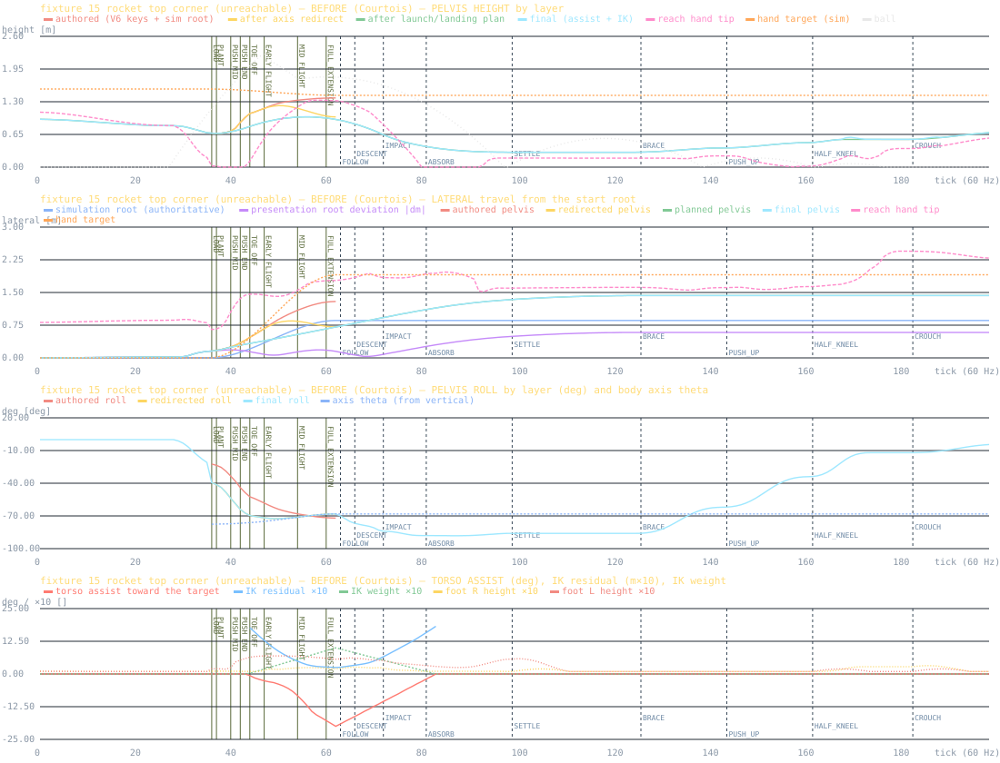
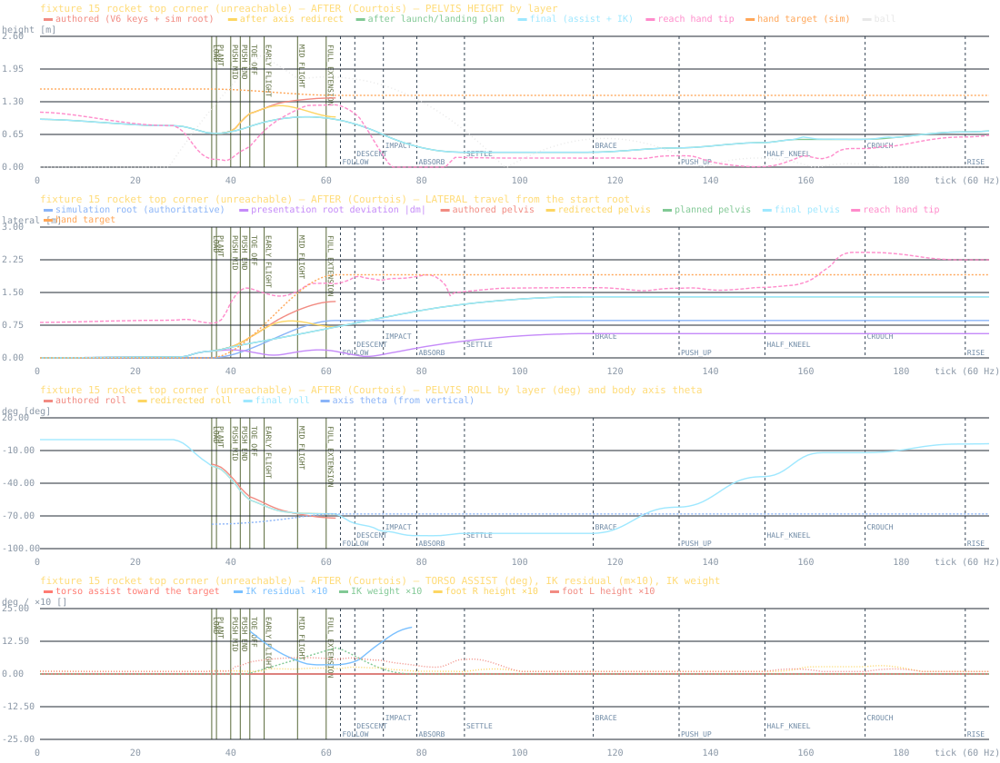
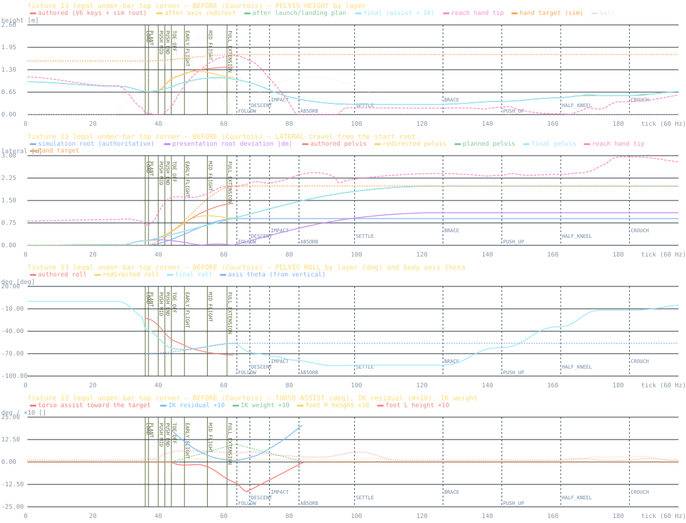
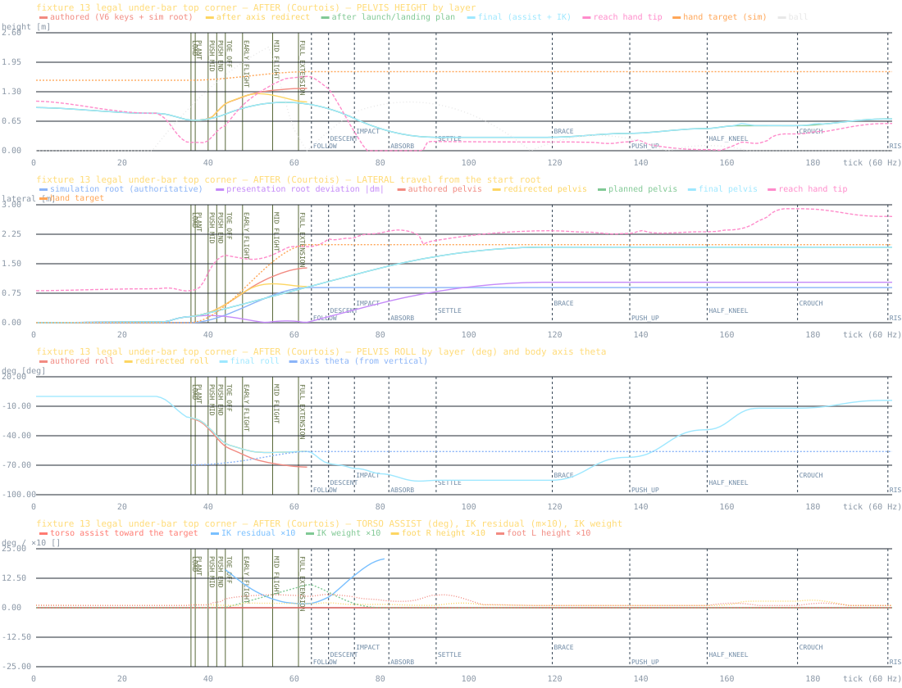
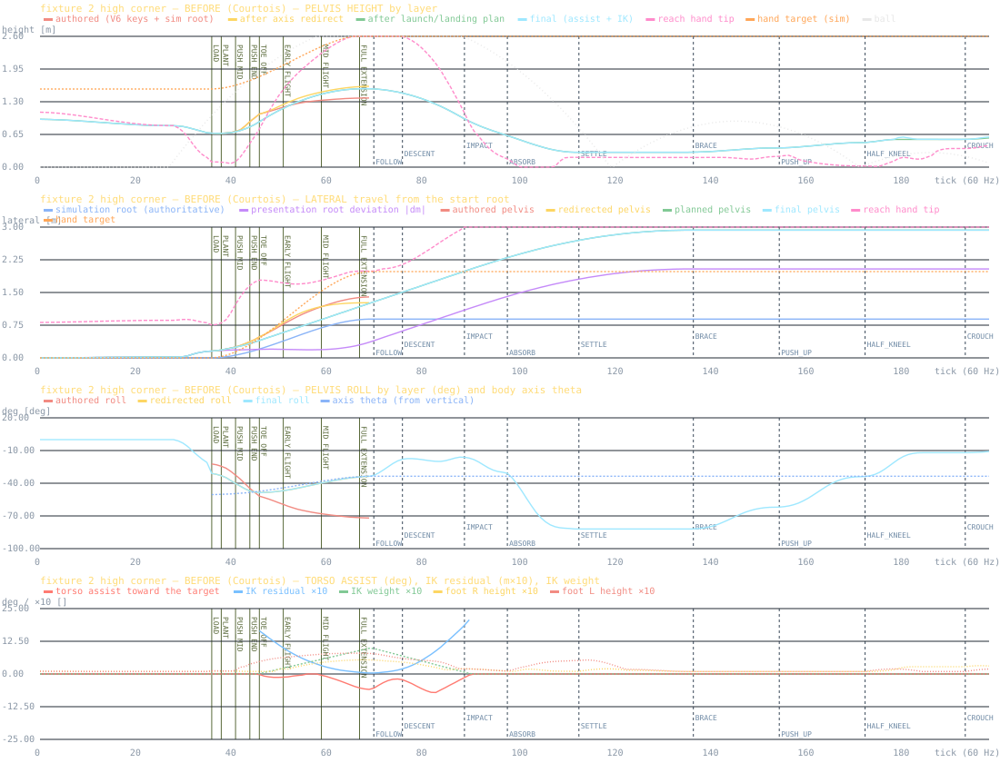
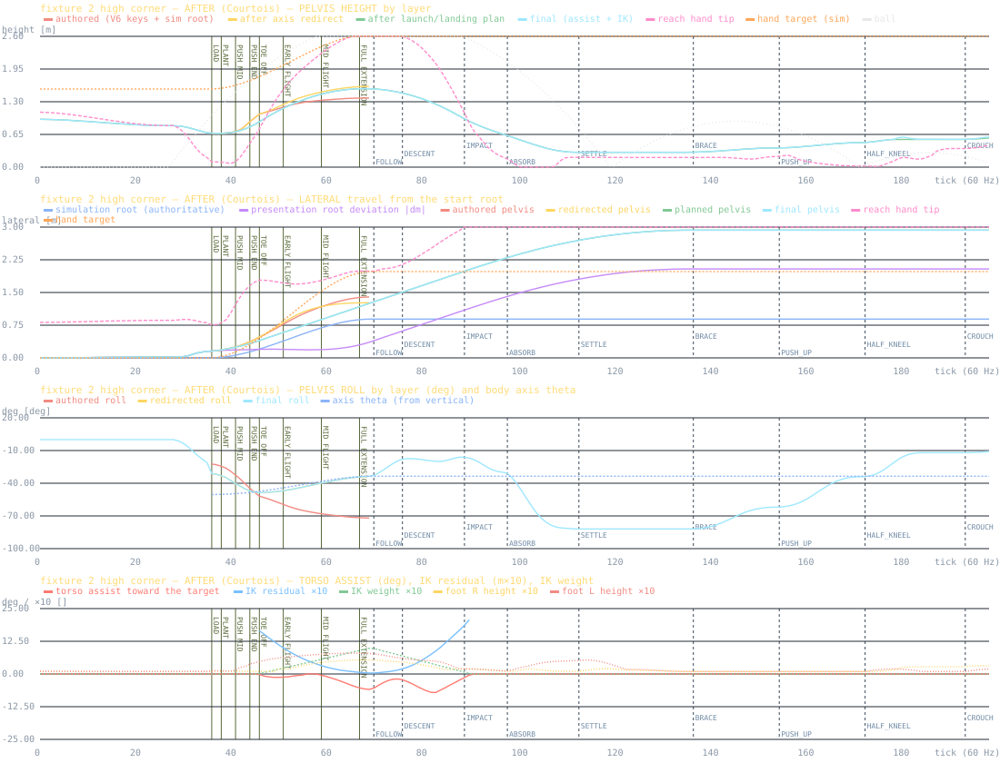
Row 1 is the authored V6 motion on the simulation root with every procedural layer off — the geometry that exists. Rows 2–5 add the axis redirect, the launch / landing plan, the torso assist and the glove IK. Fixture 15 rows 2–5 are the corrected code; fixture 2 is unchanged by it.
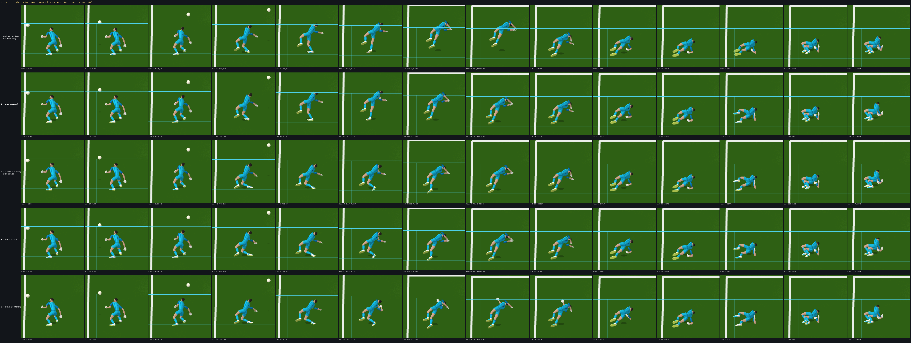
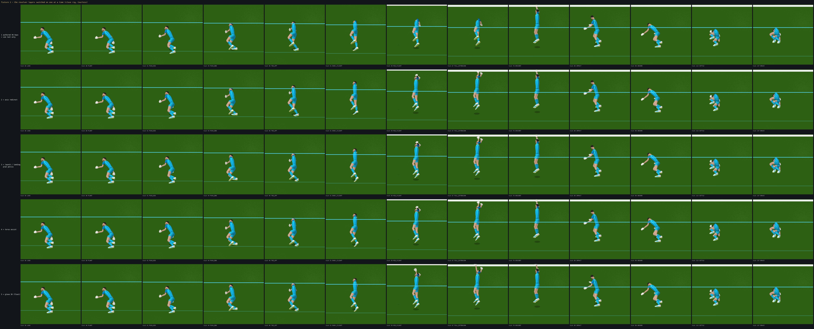
state.lateral is decided ONCE per commit from the committed target's body axis: FAR_DIVE and wSide = 1 (θ ≥ sideLandHi = 60°). It never switches mid-action. Below the regime nothing changes (fixtures 2 θ 50°, 42 θ 36°: identical manifests / captures). Master switch GK_GRAPH.lateralRule (review preset before = off).−sign·min(θ, rollMax)·(|authoredRoll|/72) — the authored roll curve scaled to the target axis, so the trunk inclines in the authored proportion (most of it in flight) instead of lerping toward the full axis during the push. Spine / chest scaling and the pelvis position lerp are unchanged.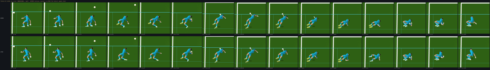
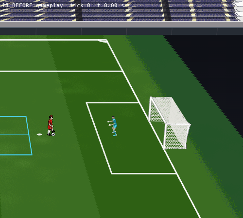
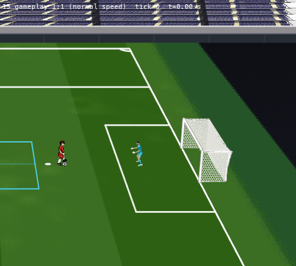
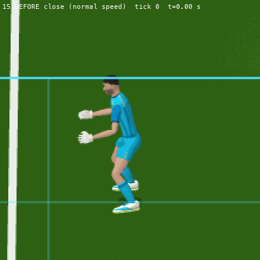
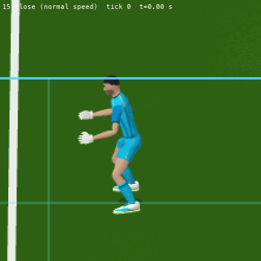
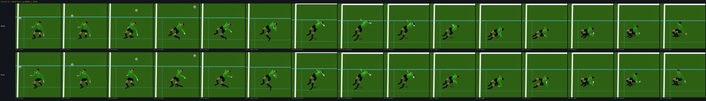
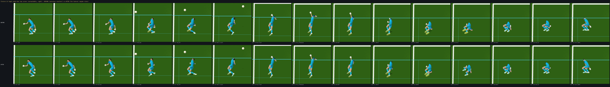
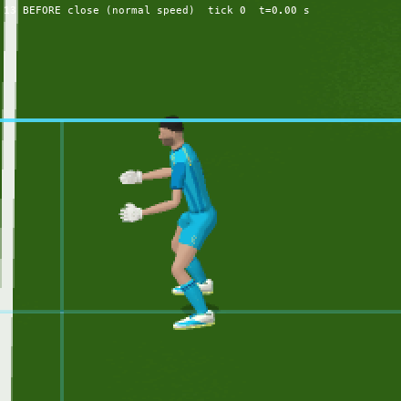
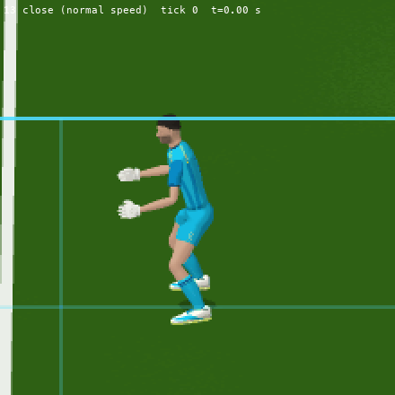
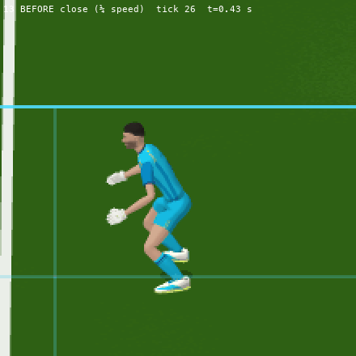
gkSelfCollision in gk_graph.js, mirrored offline by verification/arm_gate.py; the JS and Python gates agree to the millimetre). The penetration is in the authored layer itself: identical in the raw, redirected, planned and final layers, on both rigs and for both dive sides. The V6 keys swing the TRAILING (top) arm from abducted (upperArm z −30° at PLANT) to across the body (z +14 / +44 / +76 at PUSH_END / TOE_OFF / EARLY_FLIGHT, on to +140 at the reach) with an x flexion of −60°. The rig's euler order is Ry·Rx·Rz: a vector that is already lateral after Rz is invariant under Rx, so the authored flexion cannot lift a crossing arm in front of the chest — the upper arm sweeps through the chest from PUSH_MID (−2.6 cm) to TOE_OFF (−11.4 cm against the refined torso model, −18.7 cm against a plain chest capsule) and EARLY_FLIGHT, and the elbow then passes over the neck / behind the head to the authored reach pose (trailing arm up-across-behind the head). Not retargeting (the shared test rig shows the same numbers), not the shoulder / clavicle keys (0), not the bend plane, not the reach IK, not the SET → LOAD interpolation (LOAD / PLANT are +6 to +10 cm clear). The same authored path is in the approved fixture 2 / V6 42 dives (−11 cm at their toe-off) — those are below the regime and untouched.
gkLateralArmClear — a bone yaw (Ry, the horizontal adduction the rig applies last) set from the authored frontal-plane adduction z alone: smooth rise 25° → 85° of z to 55°, easing to 50° above z 100°; the authored adduction is soft-capped at z 85° (slope 0.2) so the trailing hand stays on ITS side of the reach hand (a side-by-side two-hand reach, never crossed over the reach arm). Elevation / elbow bend / hand keys are untouched, so the authored shoulder–elbow character is kept; the arm simply crosses in front of the chest and reaches up-forward beside the head instead of through the chest and behind the head. Phase-aware (a pure function of the authored key value: zero at READY / LOAD, zero again as the keys close), bounded (≤ 55°), deterministic, mirrored by the pose mirror for left dives, applied in the pre branch and the landing branch. Plus one pole hint for the REACH arm's glove IK in the regime (elbow folds forward and toward the pitch while the simulation hand target is still inside the reach) — the reach forearm no longer sweeps through the trailing forearm as the hands converge. Nothing else: no torso / root change, no assist, no reach change, no stretching; the far-lateral body correction, the zero torso assist, the landing tempo and the IK release by IMPACT are exactly as committed (fixture 2 and V6 42 byte-identical, below).Minimum over the phase of the arm segment (upper arm / forearm / hand) to torso (abdomen / chest / neck / head) clearance = distance − radii; negative = penetration; red beyond the −2 cm model tolerance, amber −2..0. "R↔L arms" = forearm / hand of one arm vs the other. The recovery stages (SETTLE → PUSH_UP) show the pre-existing brace-arm placement of the authored V6 landing keys and the brace IK bend plane — present on every dive including fixtures 2 and 42, outside this pass (a brace-IK pole hint was tried and made the bottom arm worse, so it was not kept); reported, not hidden.
| case | arm | LOAD | PLANT | PUSH_MID | PUSH_END | TOE_OFF | EARLY_FL | MID_FLIG | FULL_EXT | FOLLOW | DESCENT | IMPACT | ABSORB | SETTLE | BRACE | PUSH_UP |
|---|---|---|---|---|---|---|---|---|---|---|---|---|---|---|---|---|
| 15 CURRENT (Courtois) | L (trailing) | +10.1 | +6.2 | -2.6 | -9.5 | -11.4 | -8.2 | +0.4 | +0.3 | -1.8 | -8.5 | -11.7 | -11.6 | -11.3 | -18.9 | -16.6 |
| 15 CURRENT (Courtois) | R (reach) | +17.0 | +17.3 | +21.2 | +20.9 | +20.1 | +12.0 | +6.0 | +4.3 | +4.2 | +5.1 | +17.0 | -1.5 | -0.2 | +11.2 | +14.8 |
| 15 CURRENT (Courtois) | R↔L arms | +76.9 | +72.5 | +57.3 | +38.2 | +2.2 | -3.1 | +37.2 | +39.1 | +33.2 | -3.2 | +6.2 | +21.3 | +10.1 | +16.4 | +17.2 |
| 15 AFTER (Courtois) | L (trailing) | +10.1 | +6.2 | +3.9 | +6.6 | +6.8 | +5.9 | +5.8 | +5.8 | +6.0 | +5.9 | +5.8 | +6.4 | -10.2 | -18.9 | -16.6 |
| 15 AFTER (Courtois) | R (reach) | +17.0 | +17.3 | +21.2 | +20.9 | +20.1 | +12.0 | +6.0 | +4.3 | +4.2 | +5.1 | +17.0 | -1.5 | -0.2 | +11.2 | +14.8 |
| 15 AFTER (Courtois) | R↔L arms | +76.9 | +72.5 | +70.7 | +74.7 | +58.3 | +19.8 | +1.7 | -4.2 | +0.6 | +5.2 | +46.4 | +43.0 | +13.4 | +16.3 | +17.2 |
| 15 AFTER (test rig) | L (trailing) | +8.5 | +4.9 | +2.8 | +5.3 | +5.6 | +4.8 | +4.7 | +4.7 | +4.9 | +4.7 | +4.6 | +5.2 | -16.7 | -18.9 | -18.5 |
| 15 AFTER (test rig) | R (reach) | +14.9 | +15.1 | +18.8 | +18.6 | +17.8 | +9.4 | +4.9 | +3.4 | +3.2 | +3.7 | +15.0 | +1.3 | +2.7 | +17.2 | +12.9 |
| 15 AFTER (test rig) | R↔L arms | +71.2 | +67.1 | +65.5 | +69.1 | +53.8 | +16.2 | +0.8 | -4.3 | -0.1 | +3.0 | +43.3 | +42.5 | +15.1 | +15.6 | +16.6 |
| 13 CURRENT (Courtois) | L (trailing) | +10.1 | +6.8 | -1.3 | -9.1 | -11.4 | -7.2 | +0.6 | +0.0 | -2.2 | -12.3 | -12.6 | -8.9 | -13.6 | -11.8 | -11.6 |
| 13 CURRENT (Courtois) | R (reach) | +17.0 | +17.3 | +21.0 | +21.1 | +20.2 | +13.6 | +2.1 | -1.2 | -3.3 | -4.1 | +17.4 | -5.4 | -4.8 | +0.9 | +14.2 |
| 13 CURRENT (Courtois) | R↔L arms | +76.9 | +73.1 | +60.3 | +39.9 | +0.4 | -2.7 | +23.5 | +21.8 | +16.6 | -7.5 | +18.8 | +17.3 | +11.9 | +15.3 | +15.3 |
| 13 AFTER (Courtois) | L (trailing) | +10.1 | +6.8 | +4.1 | +6.0 | +6.7 | +5.7 | +5.6 | +5.6 | +5.9 | +5.9 | +6.0 | +6.1 | -5.0 | -11.8 | -11.6 |
| 13 AFTER (Courtois) | R (reach) | +17.0 | +17.3 | +21.0 | +21.1 | +20.2 | +13.6 | +2.1 | -1.2 | -3.3 | -4.1 | +17.4 | -5.4 | -4.8 | +0.9 | +14.2 |
| 13 AFTER (Courtois) | R↔L arms | +76.9 | +73.1 | +70.6 | +74.3 | +58.4 | +32.0 | +21.8 | +16.7 | +16.9 | +20.2 | +50.4 | +38.6 | +13.8 | +15.3 | +15.3 |
| 13 AFTER (test rig) | L (trailing) | +8.5 | +5.5 | +2.9 | +4.8 | +5.5 | +4.6 | +4.5 | +4.5 | +4.8 | +4.8 | +4.6 | +4.5 | -7.3 | -15.1 | -12.9 |
| 13 AFTER (test rig) | R (reach) | +14.9 | +15.2 | +18.6 | +18.8 | +17.9 | +10.9 | +1.4 | -1.4 | -3.3 | -4.3 | +15.2 | -2.5 | -1.9 | +2.5 | +12.9 |
| 13 AFTER (test rig) | R↔L arms | +71.2 | +67.7 | +65.4 | +68.7 | +53.8 | +28.4 | +19.9 | +15.4 | +15.5 | +17.6 | +47.0 | +39.0 | +14.3 | +15.7 | +18.3 |
| fixture-15 mirror LEFT AFTER (Courtois) | L (reach) | +17.0 | +17.5 | +21.4 | +21.2 | +20.1 | +11.5 | -1.5 | -4.1 | -3.7 | -6.1 | -5.7 | -6.5 | -5.0 | -9.1 | -9.1 |
| fixture-15 mirror LEFT AFTER (Courtois) | R (trailing) | +10.0 | +5.0 | +4.0 | +7.0 | +6.7 | +5.9 | +5.7 | +5.7 | +5.6 | +4.8 | +7.8 | +4.4 | -0.9 | -1.5 | +7.2 |
| fixture-15 mirror LEFT AFTER (Courtois) | R↔L arms | +76.7 | +71.2 | +71.3 | +74.9 | +58.3 | +35.8 | +23.9 | +18.3 | +19.6 | +4.4 | +5.9 | +3.8 | +3.8 | +3.9 | +10.4 |
| 2 control (unchanged) | L (trailing) | +9.7 | +6.0 | -4.5 | -9.5 | -11.4 | -6.5 | +0.9 | +0.4 | -2.3 | -13.9 | +11.2 | -8.5 | -12.0 | -12.8 | -12.3 |
| 2 control (unchanged) | R (reach) | +17.0 | +17.7 | +21.2 | +21.2 | +20.6 | +16.6 | +3.8 | +0.2 | +6.2 | +15.0 | +18.5 | +1.4 | +1.6 | +3.8 | +15.0 |
| 2 control (unchanged) | R↔L arms | +76.4 | +72.4 | +52.9 | +38.4 | +12.7 | -7.5 | +8.7 | +14.7 | +2.7 | -3.4 | +82.5 | +24.1 | +12.9 | +15.5 | +16.5 |
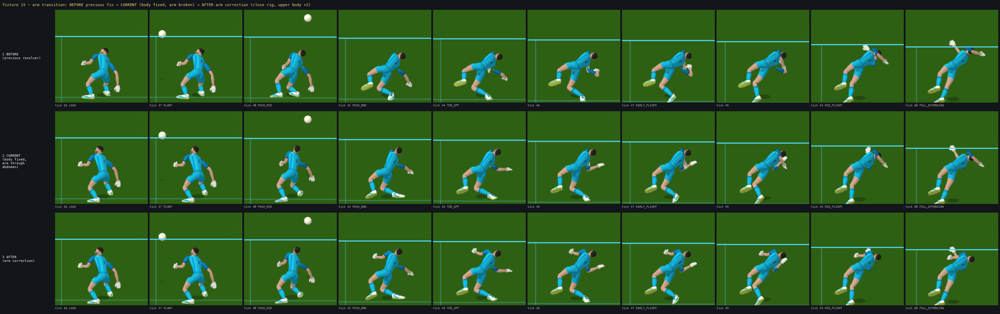
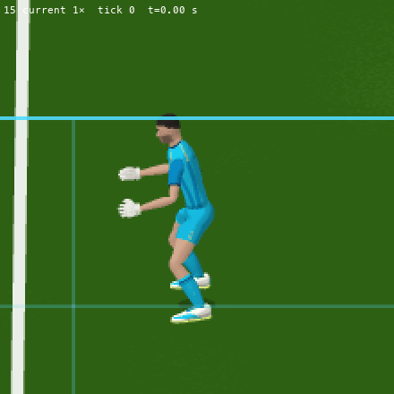
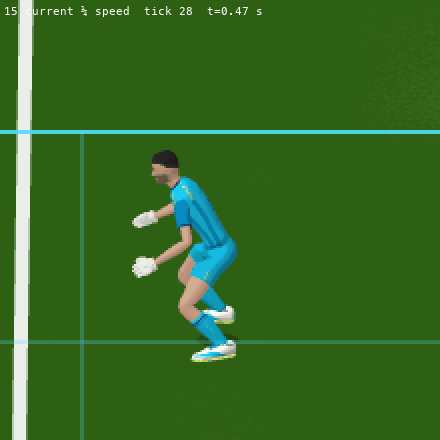
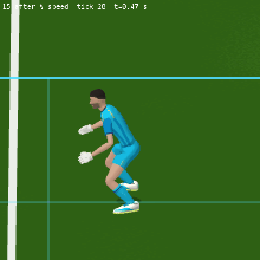
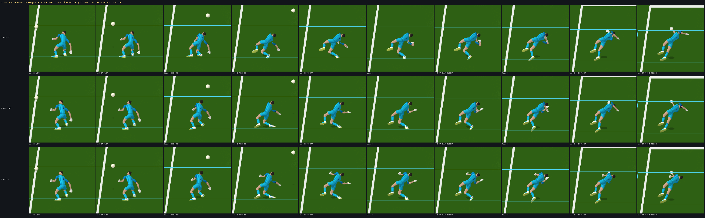
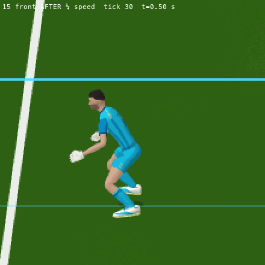
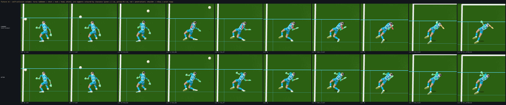
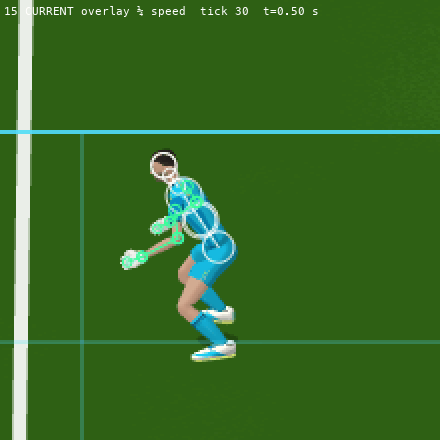
[15 game: not captured]
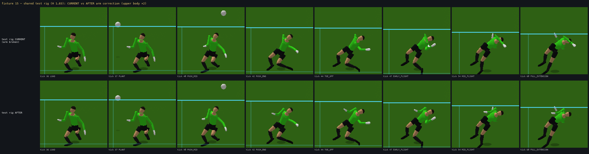
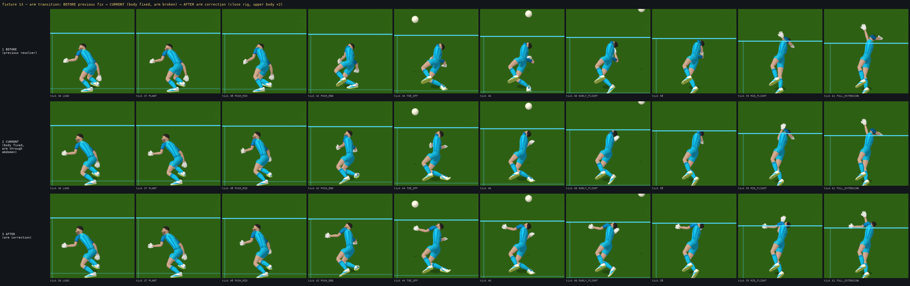
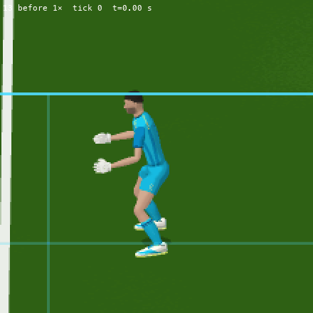
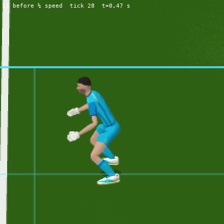
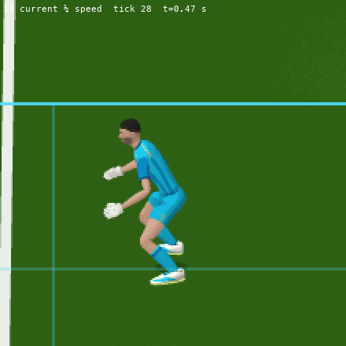
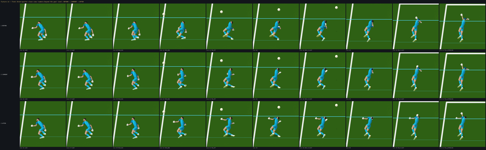
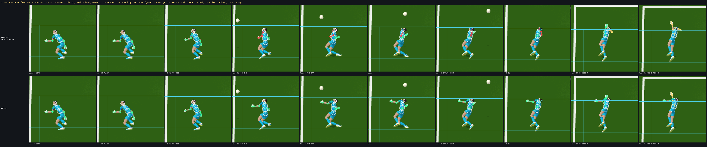
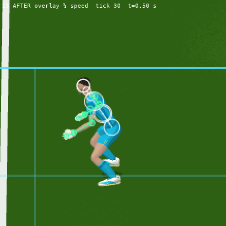
[13 game: not captured]
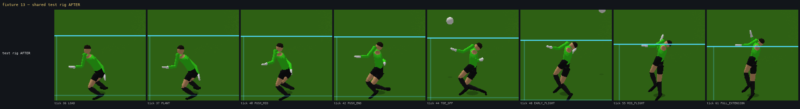
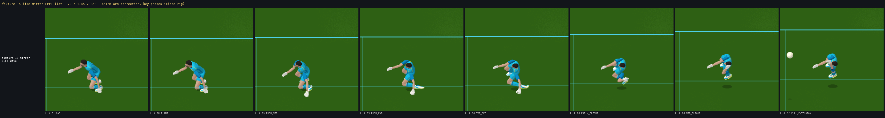
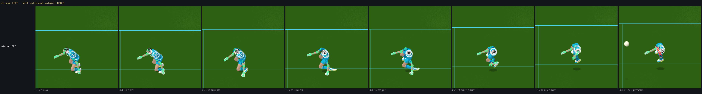
Fixture 2 (control, below the regime): 180 of 180 close-rig frames pixel-identical to the previous pass.
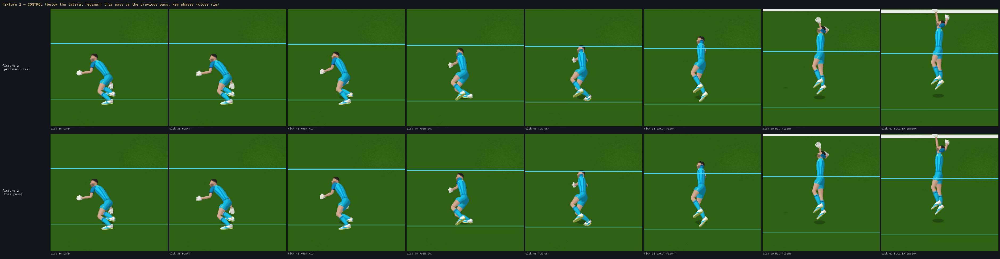
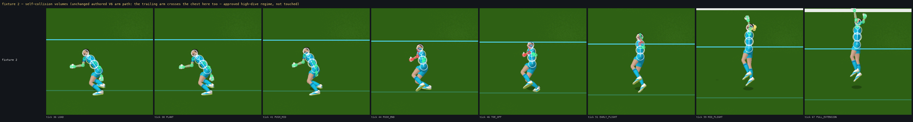
ballPoint now carries the raw predicted interception on the commit record). gkReachClass decides ONCE at the commit: a simulation-reachable commit is always REACHABLE (normal solver); a best-effort commit is classified by a PHYSICAL shortfall derived from the skeleton and the physical state, not from attributes: the raw interception vs the hand reach (0.64·H) from a pelvis anywhere between the ground-hip floor and standing hip + 0.55 m above the simulation's own end root, with 0.15·H of hip displacement beyond the feet. Shortfall ≤ 0.30·H → MARGINAL: the full-extension attempt runs and misses naturally; its launch fit is bounded at 3.7 m/s BEFORE the fit (the exec-end pelvis is lowered to what that launch reaches, never clamped afterwards). Beyond → CLEARLY UNREACHABLE: no dive solver, no launch plan, no IK toward the point — the initiation (load → plant) starts and is aborted, the body comes back up while the feet step with the simulation's own root travel (footwork odometer) and the head tracks the ball; then a recovery to the set. A taller keeper has a larger envelope (band 0.60 m at H 2.01, 0.55 m at H 1.83). A narrowly unreachable shot still produces a genuine attempt (fast wide / high wide medium / fixture 2 are MARGINAL and unchanged)."leaves the ground" = both ankle joints above 0.30 m at some tick. Slow wide R is met on the feet by the simulation (no save action). The control fixtures keep their previous launch numbers exactly (fixture 2 is MARGINAL below the 3.7 m/s bound; 42 / 13 / 15 / 14 / 39 / 36 / 40 are simulation-reachable).
| shot | rig / H | sim commit (tier · best-effort · envelope norm · margin [m]) | presentation class | intercept t [s] (from the shot) | root travel [m] | hand displacement [m] | physical shortfall / band [m] | action / contact | launch vUp [m/s] · downgrade | pelvis max [m] | leaves the ground |
|---|---|---|---|---|---|---|---|---|---|---|---|
| REACH reachable top corner R (lat +1.6 z 2.0 v 20) | Courtois / 2.014 | HIGH/FULL-STRE · reachable · 0.647 · 1.03 | REACHABLE | 0.65 | 0.641 | 1.512 | -0.59 / 0.60 | DIVE-HIGH · CONTACT | 2.29 | 1.04 | no |
| REACH reachable top corner L (lat -1.6 z 2.0 v 20) | Courtois / 2.014 | HIGH/FULL-STRE · reachable · 0.647 · 1.03 | REACHABLE | 0.65 | 0.641 | 1.512 | -0.59 / 0.60 | DIVE-HIGH · CONTACT | 2.29 | 1.04 | no |
| REACH just outside top corner R (lat +2.3 z 2.25 v 2 | Courtois / 2.014 | HIGH/FULL-STRE · reachable · 0.948 · 0.15 | REACHABLE | 0.696 | 1.023 | 2.393 | -0.09 / 0.60 | DIVE-HIGH · CONTACT | 3.17 | 1.39 | yes |
| REACH just outside top corner L (lat -2.3 z 2.25 v 2 | Courtois / 2.014 | HIGH/FULL-STRE · reachable · 0.948 · 0.15 | REACHABLE | 0.696 | 1.023 | 2.393 | -0.09 / 0.60 | DIVE-HIGH · CONTACT | 3.17 | 1.39 | yes |
| REACH clearly over the bar R (lat +0.8 z 3.6 v 22) | Courtois / 2.014 | UNREACHABLE · best-effort · 1.341 · -0.99 | CLEAR | 0.732 | 0.281 | 2.24 | +0.80 / 0.60 | DIVE-HIGH · no contact | no launch | 1.06 | no |
| REACH clearly over the bar L (lat -0.8 z 3.6 v 22) | Courtois / 2.014 | UNREACHABLE · best-effort · 1.341 · -0.99 | CLEAR | 0.732 | 0.281 | 2.24 | +0.80 / 0.60 | DIVE-HIGH · no contact | no launch | 1.06 | no |
| REACH clearly wide of the post R (lat +4.8 z 1.0 v 2 | Courtois / 2.014 | UNREACHABLE · best-effort · 1.615 · -1.79 | CLEAR | 0.954 | 1.31 | 4.728 | +1.80 / 0.60 | DIVE-MID · no contact | no launch | 1.06 | no |
| REACH clearly wide of the post L (lat -4.8 z 1.0 v 2 | Courtois / 2.014 | UNREACHABLE · best-effort · 1.615 · -1.79 | CLEAR | 0.954 | 1.31 | 4.728 | +1.80 / 0.60 | DIVE-MID · no contact | no launch | 1.06 | no |
| REACH corner flag: very high + very wide R (lat +9 z | Courtois / 2.014 | UNREACHABLE · best-effort · 3.433 · -7.09 | CLEAR | 1.38 | 1.154 | 9.29 | +6.63 / 0.60 | DIVE-HIGH · no contact | no launch | 1.06 | no |
| REACH corner flag: very high + very wide L (lat -9 z | Courtois / 2.014 | UNREACHABLE · best-effort · 3.433 · -7.09 | CLEAR | 1.38 | 1.154 | 9.29 | +6.63 / 0.60 | DIVE-HIGH · no contact | no launch | 1.06 | no |
| REACH slow wide R (lat +3.2 z 1.2 v 12) | Courtois | no commit (the simulation reached it on the feet / no save action) | |||||||||
| REACH slow wide L (lat -3.2 z 1.2 v 12) | Courtois / 2.014 | MEDIUM-DIVE RE · reachable · 0.746 · 0.74 | REACHABLE | 1.151 | 0.978 | 2.201 | -0.40 / 0.60 | DIVE-MID · CONTACT | 2.07 | 1.02 | yes |
| REACH fast wide R (lat +3.2 z 1.2 v 28) | Courtois / 2.014 | UNREACHABLE · best-effort · 1.079 · -0.23 | MARGINAL | 0.778 | 1.311 | 3.158 | +0.24 / 0.60 | DIVE-MID · no contact | 2.48 | 1.18 | yes |
| REACH fast wide L (lat -3.2 z 1.2 v 28) | Courtois / 2.014 | UNREACHABLE · best-effort · 1.079 · -0.23 | MARGINAL | 0.778 | 1.311 | 3.158 | +0.24 / 0.60 | DIVE-MID · no contact | 2.48 | 1.18 | yes |
| REACH extreme wide+high R (lat +3.5 z 3.2 v 26) | Courtois / 2.014 | UNREACHABLE · best-effort · 1.558 · -1.63 | CLEAR | 0.909 | 0.992 | 3.817 | +1.42 / 0.60 | DIVE-HIGH · no contact | no launch | 1.06 | no |
| REACH high wide medium R (lat +2.6 z 2.6 v 22) | Courtois / 2.014 | UNREACHABLE · best-effort · 1.137 · -0.4 | MARGINAL | 0.765 | 1.013 | 2.782 | +0.36 / 0.60 | DIVE-HIGH · no contact | 3.43 | 1.52 | yes |
| REACH reachable top corner R (lat +1.6 z 2.0 v 20) | test rig / 1.99 | HIGH/FULL-STRE · reachable · 0.647 · 1.03 | REACHABLE | 0.65 | 0.641 | 1.512 | -0.57 / 0.60 | DIVE-HIGH · CONTACT | 2.60 | 1.06 | no |
| REACH reachable top corner L (lat -1.6 z 2.0 v 20) | test rig / 1.99 | HIGH/FULL-STRE · reachable · 0.647 · 1.03 | REACHABLE | 0.65 | 0.641 | 1.512 | -0.57 / 0.60 | DIVE-HIGH · CONTACT | 2.60 | 1.06 | no |
| REACH just outside top corner R (lat +2.3 z 2.25 v 2 | test rig / 1.99 | HIGH/FULL-STRE · reachable · 0.948 · 0.15 | REACHABLE | 0.696 | 1.023 | 2.393 | -0.06 / 0.60 | DIVE-HIGH · CONTACT | 3.32 | 1.39 | yes |
| REACH just outside top corner L (lat -2.3 z 2.25 v 2 | test rig / 1.99 | HIGH/FULL-STRE · reachable · 0.948 · 0.15 | REACHABLE | 0.696 | 1.023 | 2.393 | -0.06 / 0.60 | DIVE-HIGH · CONTACT | 3.32 | 1.39 | yes |
| REACH clearly over the bar R (lat +0.8 z 3.6 v 22) | test rig / 1.99 | UNREACHABLE · best-effort · 1.341 · -0.99 | CLEAR | 0.732 | 0.281 | 2.24 | +0.83 / 0.60 | DIVE-HIGH · no contact | no launch | 0.99 | no |
| REACH clearly over the bar L (lat -0.8 z 3.6 v 22) | test rig / 1.99 | UNREACHABLE · best-effort · 1.341 · -0.99 | CLEAR | 0.732 | 0.281 | 2.24 | +0.83 / 0.60 | DIVE-HIGH · no contact | no launch | 0.99 | no |
| REACH clearly wide of the post R (lat +4.8 z 1.0 v 2 | test rig / 1.99 | UNREACHABLE · best-effort · 1.615 · -1.79 | CLEAR | 0.954 | 1.31 | 4.728 | +1.82 / 0.60 | DIVE-MID · no contact | no launch | 0.99 | no |
| REACH clearly wide of the post L (lat -4.8 z 1.0 v 2 | test rig / 1.99 | UNREACHABLE · best-effort · 1.615 · -1.79 | CLEAR | 0.954 | 1.31 | 4.728 | +1.82 / 0.60 | DIVE-MID · no contact | no launch | 0.99 | no |
| REACH corner flag: very high + very wide R (lat +9 z | test rig / 1.99 | UNREACHABLE · best-effort · 3.433 · -7.09 | CLEAR | 1.38 | 1.154 | 9.29 | +6.66 / 0.60 | DIVE-HIGH · no contact | no launch | 0.99 | no |
| REACH corner flag: very high + very wide L (lat -9 z | test rig / 1.99 | UNREACHABLE · best-effort · 3.433 · -7.09 | CLEAR | 1.38 | 1.154 | 9.29 | +6.66 / 0.60 | DIVE-HIGH · no contact | no launch | 0.99 | no |
| REACH slow wide R (lat +3.2 z 1.2 v 12) | test rig | no commit (the simulation reached it on the feet / no save action) | |||||||||
| REACH slow wide L (lat -3.2 z 1.2 v 12) | test rig / 1.99 | MEDIUM-DIVE RE · reachable · 0.746 · 0.74 | REACHABLE | 1.151 | 0.978 | 2.201 | -0.38 / 0.60 | DIVE-MID · CONTACT | 2.23 | 1.00 | yes |
| REACH fast wide R (lat +3.2 z 1.2 v 28) | test rig / 1.99 | UNREACHABLE · best-effort · 1.079 · -0.23 | MARGINAL | 0.778 | 1.311 | 3.158 | +0.26 / 0.60 | DIVE-MID · no contact | 2.57 | 1.15 | yes |
| REACH fast wide L (lat -3.2 z 1.2 v 28) | test rig / 1.99 | UNREACHABLE · best-effort · 1.079 · -0.23 | MARGINAL | 0.778 | 1.311 | 3.158 | +0.26 / 0.60 | DIVE-MID · no contact | 2.57 | 1.15 | yes |
| REACH extreme wide+high R (lat +3.5 z 3.2 v 26) | test rig / 1.99 | UNREACHABLE · best-effort · 1.558 · -1.63 | CLEAR | 0.909 | 0.992 | 3.817 | +1.45 / 0.60 | DIVE-HIGH · no contact | no launch | 0.99 | no |
| REACH high wide medium R (lat +2.6 z 2.6 v 22) | test rig / 1.99 | UNREACHABLE · best-effort · 1.137 · -0.4 | MARGINAL | 0.765 | 1.013 | 2.782 | +0.39 / 0.60 | DIVE-HIGH · no contact | 3.57 | 1.52 | yes |
| high corner | Courtois (fixtures) / 2.014 | UNREACHABLE · best-effort · 1.051 · -0.15 | MARGINAL | 1.174 | 0.89 | 2.381 | +0.17 / 0.60 | DIVE-HIGH · no contact | 3.58 | 1.56 | yes |
| legal under-bar top corner | Courtois (fixtures) / 2.014 | HIGH/FULL-STRE · reachable · 0.724 · 0.8 | REACHABLE | 1.075 | 0.894 | 1.995 | -0.48 / 0.60 | DIVE-HIGH · no contact | 2.23 | 1.07 | no |
| rocket top corner (unreachable) | Courtois (fixtures) / 2.014 | MEDIUM-DIVE RE · reachable · 0.66 · 0.99 | REACHABLE | 1.051 | 0.858 | 1.91 | -0.54 / 0.60 | DIVE-MID · no contact | 1.98 | 1.00 | no |
| S4 K2 high tip-up (POWER 28 m/s under the bar) | Courtois (fixtures) / 2.014 | HIGH/FULL-STRE · reachable · 0.941 · 0.16 | REACHABLE | 1.103 | 0.566 | 1.736 | -0.10 / 0.60 | DIVE-HIGH · CONTACT | 3.51 | 1.50 | yes |
| medium-height far side | Courtois (fixtures) / 2.014 | HIGH/FULL-STRE · reachable · 0.852 · 0.43 | REACHABLE | 1.13 | 0.989 | 2.25 | -0.26 / 0.60 | DIVE-HIGH · no contact | 2.74 | 1.23 | no |
| S4 fingertip deflection into the net (synthetic lat | Courtois (fixtures) / 2.014 | MEDIUM-DIVE RE · reachable · 0.686 · 0.92 | REACHABLE | 0.62 | 0.899 | 2.019 | -0.49 / 0.60 | DIVE-MID · CONTACT | 2.08 | 1.03 | yes |
| S4 fingertip over the bar (synthetic lat 1.4 z 2.45 | Courtois (fixtures) / 2.014 | STANDING REACH · reachable · 0.734 · 0.77 | REACHABLE | 0.772 | 0.15 | 1.176 | -0.30 / 0.60 | DIVE-HIGH · CONTACT | 5.58 | 1.64 | yes |
| S4 unreachable rocket stays untouched | Courtois (fixtures) / 2.014 | MEDIUM-DIVE RE · reachable · 0.66 · 0.99 | REACHABLE | 1.051 | 0.858 | 1.91 | -0.54 / 0.60 | DIVE-MID · no contact | 1.98 | 1.00 | no |
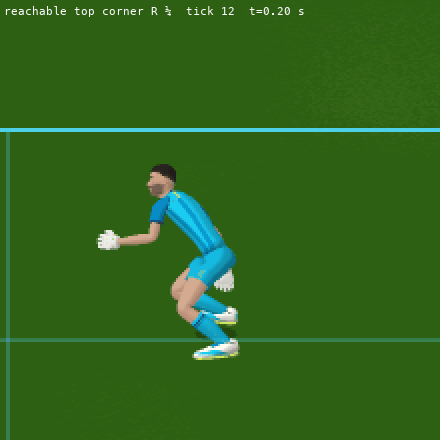
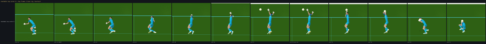
[case 0 test: not captured]
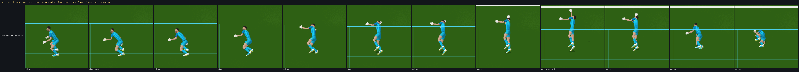
[case 2 test: not captured]
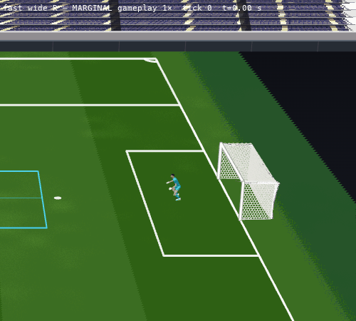
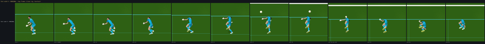
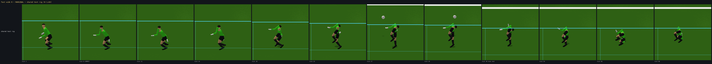
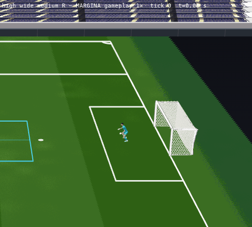
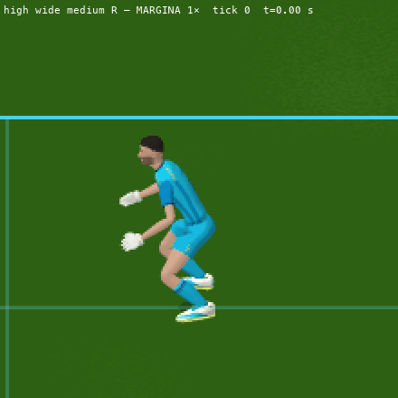
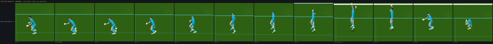
[case 15 test: not captured]
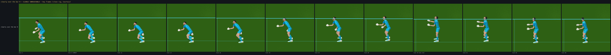
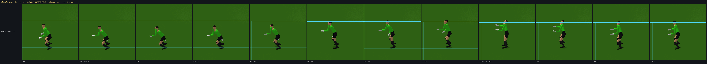
[case 6 test: not captured]
[case 9 game: not captured]
[case 9 test: not captured]
[case 13 game: not captured]
[case 13 test: not captured]
| case | arm | LOAD | PLANT | PUSH_MID | PUSH_END | TOE_OFF | EARLY_FL | MID_FLIG | FULL_EXT | FOLLOW | DESCENT | IMPACT | ABSORB | SETTLE | BRACE | PUSH_UP |
|---|---|---|---|---|---|---|---|---|---|---|---|---|---|---|---|---|
| 15 AFTER (Courtois) | L (trailing) | +10.1 | +6.2 | +3.9 | +6.6 | +6.8 | +5.9 | +5.8 | +5.8 | +6.0 | +5.9 | +5.8 | +6.4 | +4.6 | +6.1 | +2.0 |
| 15 AFTER (Courtois) | R (reach) | +17.0 | +17.3 | +21.2 | +20.9 | +20.1 | +12.0 | +6.0 | +4.3 | +4.2 | +5.1 | +17.0 | -1.5 | -0.2 | +11.2 | +14.8 |
| 15 AFTER (Courtois) | R↔L arms | +76.9 | +72.5 | +70.7 | +74.7 | +58.3 | +19.8 | +1.7 | -4.2 | +0.6 | +5.2 | +46.4 | +43.0 | +40.9 | +47.1 | +47.0 |
| 13 AFTER (Courtois) | L (trailing) | +10.1 | +6.8 | +4.1 | +6.0 | +6.7 | +5.7 | +5.6 | +5.6 | +5.9 | +5.9 | +6.0 | +6.1 | +4.6 | +6.0 | +2.0 |
| 13 AFTER (Courtois) | R (reach) | +17.0 | +17.3 | +21.0 | +21.1 | +20.2 | +13.6 | +2.1 | -1.2 | -3.3 | -4.1 | +17.4 | -5.4 | -4.8 | +0.9 | +14.2 |
| 13 AFTER (Courtois) | R↔L arms | +76.9 | +73.1 | +70.6 | +74.3 | +58.4 | +32.0 | +21.8 | +16.7 | +16.9 | +20.2 | +50.4 | +38.6 | +35.8 | +43.3 | +44.8 |
| 14 AFTER (Courtois, left dive) | L (reach) | +17.0 | +17.7 | +21.4 | +21.1 | +20.5 | +15.1 | -0.8 | -9.3 | -9.0 | +3.2 | +17.2 | +2.9 | +3.2 | +6.0 | +11.4 |
| 14 AFTER (Courtois, left dive) | R (trailing) | +9.7 | +5.1 | +3.8 | +6.3 | +6.7 | +5.7 | +5.5 | +5.5 | +5.9 | +3.8 | +2.8 | +3.2 | +4.6 | +6.0 | +2.0 |
| 14 AFTER (Courtois, left dive) | R↔L arms | +76.3 | +71.3 | +70.9 | +74.6 | +60.3 | +40.0 | +34.0 | +30.1 | +30.2 | +30.1 | +47.9 | +15.0 | +8.3 | +8.4 | +14.6 |
| 4 far post — LOW DIVE (Courtois) | L (reach) | +17.0 | +17.4 | +20.8 | +20.7 | +17.9 | — | — | — | — | — | — | +2.4 | +2.9 | +7.4 | +12.7 |
| 4 far post — LOW DIVE (Courtois) | R (trailing) | +9.9 | +6.4 | +4.2 | +6.9 | +1.1 | — | — | — | — | — | — | -7.8 | +4.7 | +6.1 | +2.0 |
| 4 far post — LOW DIVE (Courtois) | R↔L arms | +76.4 | +72.5 | +70.6 | +74.6 | +68.6 | — | — | — | — | — | — | +2.1 | +5.3 | +6.7 | +13.9 |
| 51 NW-facing low dive — COLLAPSE (Courtois) | L (reach) | +17.0 | — | — | — | — | — | — | — | — | — | — | — | — | — | — |
| 51 NW-facing low dive — COLLAPSE (Courtois) | R (trailing) | +9.0 | — | — | — | — | — | — | — | — | — | — | — | — | — | — |
| 51 NW-facing low dive — COLLAPSE (Courtois) | R↔L arms | +74.9 | — | — | — | — | — | — | — | — | — | — | — | — | — | — |
| 34 controlled parry — COLLAPSE (Courtois) | L (trailing) | +9.3 | — | — | — | — | — | — | — | — | — | — | — | -6.7 | -6.7 | +5.9 |
| 34 controlled parry — COLLAPSE (Courtois) | R (reach) | +17.0 | — | — | — | — | — | — | — | — | — | — | — | +7.7 | +7.6 | +15.8 |
| 34 controlled parry — COLLAPSE (Courtois) | R↔L arms | +75.3 | — | — | — | — | — | — | — | — | — | — | — | +3.9 | +3.9 | +7.3 |
| 39 fingertip / CATCH at this band (Courtois) | L (reach) | +17.0 | +17.3 | +21.0 | +20.9 | +19.9 | +10.7 | -2.9 | -4.3 | -4.5 | -6.7 | -5.9 | -6.2 | -3.0 | -3.1 | -8.9 |
| 39 fingertip / CATCH at this band (Courtois) | R (trailing) | +10.1 | +6.6 | +4.1 | +6.3 | +6.8 | +6.0 | +5.9 | +5.9 | +4.1 | +4.0 | +7.9 | +5.9 | +5.6 | +5.5 | +3.6 |
| 39 fingertip / CATCH at this band (Courtois) | R↔L arms | +76.8 | +72.9 | +70.6 | +74.4 | +57.5 | +35.0 | +22.1 | +17.3 | +22.5 | +8.8 | +11.0 | +5.4 | +5.1 | +2.2 | +2.6 |
| fixture-15 mirror LEFT (CATCH at this band) | L (reach) | +17.0 | +17.5 | +21.4 | +21.2 | +20.1 | +11.5 | -1.5 | -4.1 | -3.7 | -6.1 | -5.7 | -6.4 | -4.8 | -9.1 | -9.1 |
| fixture-15 mirror LEFT (CATCH at this band) | R (trailing) | +10.0 | +5.0 | +4.0 | +7.0 | +6.7 | +5.9 | +5.7 | +5.7 | +5.6 | +4.8 | +7.6 | +3.2 | -2.8 | -2.8 | +7.1 |
| fixture-15 mirror LEFT (CATCH at this band) | R↔L arms | +76.7 | +71.2 | +71.3 | +74.9 | +58.3 | +35.8 | +23.9 | +18.3 | +19.6 | +4.0 | +5.7 | +3.8 | +3.9 | +2.7 | +10.4 |
| 15 AFTER (test rig) | L (trailing) | +8.5 | +4.9 | +2.8 | +5.3 | +5.6 | +4.8 | +4.7 | +4.6 | +4.9 | +4.7 | +4.6 | +5.2 | +3.4 | +1.3 | +1.1 |
| 15 AFTER (test rig) | R (reach) | +14.9 | +15.1 | +18.8 | +18.6 | +17.8 | +9.4 | +4.9 | +3.4 | +3.2 | +3.7 | +15.0 | +1.3 | +2.7 | +17.2 | +12.9 |
| 15 AFTER (test rig) | R↔L arms | +71.2 | +67.1 | +65.5 | +69.1 | +53.8 | +16.2 | +0.8 | -4.3 | -0.1 | +3.0 | +43.3 | +42.5 | +43.4 | +49.5 | +47.5 |
| 4 LOW DIVE (test rig) | L (reach) | +14.8 | +15.2 | +18.4 | +18.4 | +15.2 | — | — | — | — | — | — | +3.7 | +4.3 | +8.8 | +14.3 |
| 4 LOW DIVE (test rig) | R (trailing) | +8.4 | +5.1 | +3.0 | +5.7 | -0.2 | — | — | — | — | — | — | -8.4 | +3.4 | +1.3 | +1.1 |
| 4 LOW DIVE (test rig) | R↔L arms | +70.8 | +67.1 | +65.4 | +69.0 | +62.2 | — | — | — | — | — | — | +1.2 | +4.3 | +4.3 | +13.2 |
| 34 COLLAPSE (test rig) | L (trailing) | +7.8 | — | — | — | — | — | — | — | — | — | — | — | -7.1 | -7.0 | +4.3 |
| 34 COLLAPSE (test rig) | R (reach) | +14.9 | — | — | — | — | — | — | — | — | — | — | — | +7.0 | +6.9 | +14.4 |
| 34 COLLAPSE (test rig) | R↔L arms | +69.8 | — | — | — | — | — | — | — | — | — | — | — | +4.7 | +4.7 | +8.4 |
| 42 V6 control (test rig, unchanged) | L (trailing) | +8.0 | +4.8 | -2.7 | -9.1 | -10.8 | -6.8 | +1.0 | +0.1 | -2.0 | -13.8 | +9.1 | -8.3 | -15.4 | -3.9 | +0.7 |
| 42 V6 control (test rig, unchanged) | R (reach) | +14.1 | +14.7 | +18.0 | +18.2 | +17.8 | +11.1 | +3.3 | +0.1 | +0.1 | +8.1 | +16.5 | -0.4 | -0.5 | -0.1 | +7.6 |
| 42 V6 control (test rig, unchanged) | R↔L arms | +68.0 | +64.4 | +52.2 | +34.4 | +13.4 | -6.1 | +6.6 | +8.7 | +1.8 | -0.8 | +74.8 | -0.3 | -3.3 | +2.8 | +10.9 |
| 2 control (Courtois, unchanged) | L (trailing) | +9.7 | +6.0 | -4.5 | -9.5 | -11.4 | -6.5 | +0.9 | +0.4 | -2.3 | -13.9 | +11.2 | -8.5 | -12.0 | -12.8 | -12.3 |
| 2 control (Courtois, unchanged) | R (reach) | +17.0 | +17.7 | +21.2 | +21.2 | +20.6 | +16.6 | +3.8 | +0.2 | +6.2 | +15.0 | +18.5 | +1.4 | +1.6 | +3.8 | +15.0 |
| 2 control (Courtois, unchanged) | R↔L arms | +76.4 | +72.4 | +52.9 | +38.4 | +12.7 | -7.5 | +8.7 | +14.7 | +2.7 | -3.4 | +82.5 | +24.1 | +12.9 | +15.5 | +16.5 |
Fixture 2 (control): 180 of 180 close-rig frames pixel-identical to the previous pass.
| case | action / motion | θ / wSide → regime | simulation result | launch vUp / vLat | pelvis height [m] | roll TOE_OFF (authored → resolved) | roll FULL_EXT | torso assist | landing ticks | pres-root dev |
|---|---|---|---|---|---|---|---|---|---|---|
| 15 rocket top corner (unreachable) Courtois H 2.014 | DIVE-MID / FAR_DIVE exec 0.442 s | 77.6° / 1.00 → LATERAL | miss residual max 1.788 | 1.98 / 1.32 | 0.30–1.00 | -52° → -55° | -72° → -68° | 0.0° | tE 63 / IMPACT 72 / SETTLE 89 / BRACE 116 | 0.557 |
| 13 legal under-bar top corner Courtois H 2.014 | DIVE-HIGH / FAR_DIVE exec 0.466 s | 69.7° / 1.00 → LATERAL | miss residual max 2.072 | 2.23 / 1.73 | 0.30–1.07 | -51° → -48° | -71° → -56° | 0.0° | tE 64 / IMPACT 74 / SETTLE 93 / BRACE 120 | 1.030 |
| 2 high corner Courtois H 2.014 | DIVE-HIGH best-effort / FAR_DIVE exec 0.565 s | 50.4° / 0.62 → high-dive | miss residual max 2.068 | 3.58 / 2.22 | 0.30–1.56 | -52° → -49° | -72° → -34° | 7.1° | tE 70 / IMPACT 89 / SETTLE 113 / BRACE 137 | 2.039 |
| 42 S4 K2 high tip-up (POWER 28 m/s under the bar) Courtois H 2.014 | DIVE-HIGH / FAR_DIVE exec 0.461 s | 37.0° / 0.08 → high-dive | CONTACT (tick 62) residual max 1.980 | 3.51 / 1.43 | 0.30–1.50 | -52° → -39° | -72° → -23° | 6.8° | tE 66 / IMPACT 87 / SETTLE 111 / BRACE 135 | 1.208 |
| 14 medium-height far side Courtois H 2.014 | DIVE-HIGH / FAR_DIVE exec 0.521 s | 64.9° / 1.00 → LATERAL | miss residual max 2.334 | 2.74 / 2.28 | 0.30–1.23 | 51° → 44° | 71° → 50° | 0.0° | tE 67 / IMPACT 80 / SETTLE 101 / BRACE 127 | 1.727 |
| 39 S4 fingertip deflection into the net (syntheti Courtois H 2.014 | DIVE-MID / FAR_DIVE exec 0.463 s | 82.7° / 1.00 → LATERAL | CONTACT (tick 37) residual max 1.633 | 2.08 / 1.25 | 0.30–1.03 | 52° → 59° | 72° → 77° | 0.0° | tE 37 / IMPACT 47 / SETTLE 63 / BRACE 90 | 0.251 |
| a2_0 LAT reachable far corner R (lat +1.8 z 1.2 v 1 Courtois H 2.014 | DIVE-MID / FAR_DIVE exec 0.242 s | 80.1° / 1.00 → LATERAL | CONTACT (tick 41) residual max 1.469 | 1.50 / 0.12 | 0.30–0.88 | -50° → -54° | -71° → -72° | 0.0° | tE 41 / IMPACT 53 / SETTLE 73 / BRACE 100 | 0.427 |
| a2_1 LAT reachable far corner L (lat -1.8 z 1.2 v 1 Courtois H 2.014 | DIVE-MID / FAR_DIVE exec 0.242 s | 80.1° / 1.00 → LATERAL | CONTACT (tick 41) residual max 1.469 | 1.50 / 0.12 | 0.30–0.88 | 50° → 54° | 71° → 72° | 0.0° | tE 41 / IMPACT 53 / SETTLE 73 / BRACE 100 | 0.427 |
| a2_2 LAT near-max reach R (lat +2.1 z 1.4 v 19) Courtois H 2.014 | DIVE-MID / FAR_DIVE exec 0.412 s | 77.2° / 1.00 → LATERAL | CONTACT (tick 42) residual max 1.510 | 2.03 / 1.69 | 0.30–1.01 | -50° → -53° | -71° → -67° | 0.0° | tE 41 / IMPACT 52 / SETTLE 69 / BRACE 96 | 0.914 |
| a2_3 LAT near-max reach L (lat -2.1 z 1.4 v 19) Courtois H 2.014 | DIVE-MID / FAR_DIVE exec 0.412 s | 77.2° / 1.00 → LATERAL | CONTACT (tick 42) residual max 1.510 | 2.03 / 1.69 | 0.30–1.01 | 50° → 53° | 71° → 67° | 0.0° | tE 41 / IMPACT 52 / SETTLE 69 / BRACE 96 | 0.914 |
| a2_8 LAT beyond reach fast R (lat +2.2 z 1.2 v 21) Courtois H 2.014 | DIVE-MID / FAR_DIVE exec 0.493 s | 83.3° / 1.00 → LATERAL | CONTACT (tick 38) residual max 1.645 | 2.19 / 1.60 | 0.30–1.06 | -49° → -56° | -72° → -78° | 0.0° | tE 38 / IMPACT 48 / SETTLE 63 / BRACE 90 | 0.819 |
| a2_9 LAT beyond reach fast L (lat -2.2 z 1.2 v 21) Courtois H 2.014 | DIVE-MID / FAR_DIVE exec 0.493 s | 83.3° / 1.00 → LATERAL | CONTACT (tick 38) residual max 1.645 | 2.19 / 1.60 | 0.30–1.06 | 49° → 56° | 72° → 78° | 0.0° | tE 38 / IMPACT 48 / SETTLE 63 / BRACE 90 | 0.819 |
| a1_6 LAT fixture-15-like mirror L (lat -1.9 z 1.45 Courtois H 2.014 | DIVE-MID / FAR_DIVE exec 0.436 s | 75.2° / 1.00 → LATERAL | CONTACT (tick 36) residual max 1.506 | 2.01 / 1.31 | 0.30–0.99 | 50° → 51° | 71° → 64° | 0.0° | tE 35 / IMPACT 45 / SETTLE 62 / BRACE 89 | 0.571 |
| adv8 ADV SW-facing: wide R high (lat +2.6 z 2.6 v 2 Courtois H 2.014 | DIVE-HIGH best-effort / FAR_DIVE exec 0.876 s | 64.7° / 1.00 → LATERAL | miss residual max 2.435 | 3.54 / 1.95 | 0.30–1.66 | -50° → -43° | -71° → -49° | 0.0° | tE 61 / IMPACT 71 / SETTLE 86 / BRACE 112 | 1.489 |
| adv9 ADV SW-facing: wide L high (lat -2.6 z 2.6 v 2 Courtois H 2.014 | DIVE-HIGH best-effort / FAR_DIVE exec 0.616 s | 62.5° / 1.00 → LATERAL | miss residual max 2.497 | 3.26 / 2.59 | 0.30–1.45 | 52° → 43° | 71° → 47° | 0.0° | tE 45 / IMPACT 60 / SETTLE 80 / BRACE 105 | 2.209 |
| 15 rocket top corner (unreachable) shared test rig H 1.99 | DIVE-MID / FAR_DIVE exec 0.442 s | 77.2° / 1.00 → LATERAL | miss residual max 1.748 | 2.13 / 1.38 | 0.29–0.98 | -52° → -55° | -72° → -67° | 0.0° | tE 63 / IMPACT 73 / SETTLE 90 / BRACE 117 | 0.630 |
| 13 legal under-bar top corner shared test rig H 1.99 | DIVE-HIGH / FAR_DIVE exec 0.466 s | 69.4° / 1.00 → LATERAL | miss residual max 1.989 | 2.39 / 1.79 | 0.29–1.05 | -51° → -48° | -71° → -56° | 0.0° | tE 64 / IMPACT 75 / SETTLE 94 / BRACE 121 | 1.113 |
| 2 high corner shared test rig H 1.99 | DIVE-HIGH best-effort / FAR_DIVE exec 0.565 s | 50.2° / 0.61 → high-dive | miss residual max 1.991 | 3.69 / 2.25 | 0.29–1.55 | -52° → -48° | -72° → -34° | 10.1° | tE 70 / IMPACT 89 / SETTLE 113 / BRACE 137 | 2.103 |
| 42 S4 K2 high tip-up (POWER 28 m/s under the bar) shared test rig H 1.9 | DIVE-HIGH / FAR_DIVE exec 0.461 s | 36.0° / 0.04 → high-dive | CONTACT (tick 62) residual max 1.850 | 3.79 / 1.57 | 0.28–1.52 | -52° → -38° | -72° → -22° | 9.1° | tE 66 / IMPACT 90 / SETTLE 114 / BRACE 138 | 1.473 |
| 14 medium-height far side shared test rig H 1.99 | DIVE-HIGH / FAR_DIVE exec 0.521 s | 64.7° / 1.00 → LATERAL | miss residual max 2.246 | 2.90 / 2.33 | 0.29–1.22 | 51° → 44° | 71° → 49° | 0.0° | tE 67 / IMPACT 81 / SETTLE 102 / BRACE 128 | 1.812 |
| 39 S4 fingertip deflection into the net (syntheti shared test rig H 1.99 | DIVE-MID / FAR_DIVE exec 0.463 s | 82.4° / 1.00 → LATERAL | CONTACT (tick 37) residual max 1.595 | 2.22 / 1.31 | 0.29–1.00 | 52° → 58° | 72° → 76° | 0.0° | tE 37 / IMPACT 47 / SETTLE 63 / BRACE 90 | 0.313 |
[42 E: not captured]
[42 Estrip: not captured]
[14 E: not captured]
[14 Estrip: not captured]
[39 E: not captured]
[39 Estrip: not captured]
[a2_0 E: not captured]
[a2_0 Estrip: not captured]
[a2_1 E: not captured]
[a2_1 Estrip: not captured]
[a2_3 E: not captured]
[a2_3 Estrip: not captured]
[a2_8 E: not captured]
[a2_8 Estrip: not captured]
[a2_9 E: not captured]
[a2_9 Estrip: not captured]
[a1_6 E: not captured]
[a1_6 Estrip: not captured]
[adv9 E: not captured]
[adv9 Estrip: not captured]
| dimension | authored (V6 clip GK_CLIP_FAR_DIVE, mirrored L/R) | procedural (resolver) | safe range / behaviour beyond |
|---|---|---|---|
| direction (side) | right; mirrored for left (frozen per commit) | world facing from the simulation; body axis sign from the committed target | any facing; the mirror is exact (matrix: L/R pairs) |
| body-axis angle θ (from vertical) | roll curve to −72° at full extension | redirect: θ < 60° blends feet/side landing (approved high-dive rule); θ ≥ 60° LATERAL regime: roll = θ·(authored fraction), capped at rollMax (LOW_DIVE 82°; FAR_DIVE none) | 35–60° blend, 60–90° lateral; θ > 90° (ball below the hip) is classified LOW → LOW_DIVE / LOW_COLLAPSE by the motion selector |
| height / pelvis | +0.30 m rise at full extension | axis solve: pelvis = target − 0.64·H·d, clamped to [0.30 m, hip + 0.55·launch]; launch arc through it (bounded post-exec) | target heights 0.9–2.6 m produce pelvis 0.9–1.56 m; the ceiling is the jump cap, above it the reach is the arm's only |
| shoulder reach / hand placement | arms along the body axis at full extension | glove IK to the SIMULATION hand target (weight ramps in flight), elbow fold ≥ 30°, clavicle assist (0 in the lateral regime) | reachable: contact at the sim's contact tick; unreachable: the hand stops short by the sim's miss (residual 0.2–0.6 m on the matrix) — not chased |
| torso inclination | trunk tilt 64 → 100° across the push / flight | spine / chest roll scaled by min(1.4, θ/72) in flight; torso assist ±20° toward the target (high-dive rule only; 0 in the lateral regime) | — |
| take-off | LOAD 0.00 / PLANT 0.10 / PUSH 0.19–0.26 / TOE_OFF 0.31 of the exec window | authored crouch is kept (feet planted) until launchPos; the launch plan takes over the pelvis from toe-off | exec windows 0.15–0.75 s on the matrix; very short windows (< 0.2 s, late commits) compress the push — sim-authoritative |
| landing | postSide keys FOLLOW → DESCENT → TOUCH → IMPACT → ABSORB → SETTLE → BRACE → PUSH_UP → HALF_KNEEL → CROUCH | side plan: touch / impact / ground heights, slide deceleration, fall-timed impact / absorb (lateral regime), get-up chain, reposition steps to the sim root | landing side = the measured landed side; the hip never dips below the ground height |
All-fixture gate (0–79, 260 ticks, full precision) — ALL IDENTICAL: YES; distribution gate (64–79, 300 ticks) — ALL IDENTICAL: YES (SPRITE vs OFF vs SKELETAL_3D test rig vs SKELETAL_3D Courtois: simulation hashes, commit / contact ticks, ball, events).
| frozen TEST-character manifest (320 / 300 ticks) vs the committed HEAD manifest | result |
|---|---|
| 42 S4 K2 high tip-up (POWER 28 m/s under the ba | IDENTICAL (every joint, every tick) |
| 45 M3 chest catch (synthK lat 0.05 z 1.15 15 m/ | IDENTICAL (every joint, every tick) |
| 55 M3b foot save RIGHT wide (aim 33.2, lat +0.5 | IDENTICAL (every joint, every tick) |
| 56 M3b foot save LEFT wide (aim 34.78, lat -0.5 | IDENTICAL (every joint, every tick) |
| 57 M3b SW-facing foot save RIGHT (from the sout | IDENTICAL (every joint, every tick) |
| 58 M3b NW-facing foot save LEFT (from the north | IDENTICAL (every joint, every tick) |
| 59 M3b SSW-facing foot save RIGHT (from [96,40] | IDENTICAL (every joint, every tick) |
| 60 M3b NNW-facing foot save LEFT (from [96,28], | IDENTICAL (every joint, every tick) |
| 64 D1 PUT DOWN central (chest catch → place ahe | IDENTICAL (every joint, every tick) |
| 65 D2 HAND ROLL RIGHT (target [96, 26], right h | IDENTICAL (every joint, every tick) |
| 66 D2 HAND ROLL LEFT (target [96, 42], left han | IDENTICAL (every joint, every tick) |
| 67 D3 OVERARM THROW RIGHT (target [78, 24]) | IDENTICAL (every joint, every tick) |
| 68 D3 OVERARM THROW LEFT (target [78, 44]) | IDENTICAL (every joint, every tick) |
| 69 D3 OVERARM THROW far, straight (target [62, | IDENTICAL (every joint, every tick) |
| 70 D4 PUNT RIGHT foot (target [55, 34]) | IDENTICAL (every joint, every tick) |
| 71 D4 PUNT LEFT foot (target [55, 34]) | IDENTICAL (every joint, every tick) |
| 72 D5 angled: SW-facing catch → PUT DOWN (body | IDENTICAL (every joint, every tick) |
| 73 D5 angled: NW-facing catch → THROW to the fa | IDENTICAL (every joint, every tick) |
| 74 D5 angled: SSW-facing catch → ROLL across (t | IDENTICAL (every joint, every tick) |
| 75 D5 angled: SW-facing catch → PUNT left foot | IDENTICAL (every joint, every tick) |
| survey (all fixtures) | test rig — HEAD | test rig — now | Courtois — HEAD | Courtois — now |
|---|---|---|---|---|
| fixtures × 300 ticks | 80 | 80 | 80 | 80 |
| bad continuity assertions | 1 | 1 | 12 | 12 |
| NaN frames | 0 | 0 | 0 | 0 |
| bend-plane flips (IK) | 26 | 26 | 24 | 24 |
| joint-limit ticks | 0 | 0 | 0 | 0 |
| max presentation-root deviation [m] | 1.473 (fixture 42) | 1.473 (fixture 42) | 1.208 (fixture 42) | 1.208 (fixture 42) |
| max torso-assist [deg] | 20.000 (fixture 53) | 20.000 (fixture 53) | 20.000 (fixture 32) | 20.000 (fixture 32) |
| min elbow included angle [deg] | 27.437 (fixture 27) | 27.437 (fixture 27) | 18.918 (fixture 67) | 18.918 (fixture 67) |
| max pelvis height [m] | 1.630 (fixture 40) | 1.528 (fixture 8) | 1.682 (fixture 40) | 1.495 (fixture 42) |
| max head height [m] | 2.201 (fixture 6) | 2.193 (fixture 8) | 2.270 (fixture 6) | 2.162 (fixture 42) |
| min planted sole height [m] | — | — | -0.003 (fixture 52) | -0.003 (fixture 52) |
| min arm-to-torso clearance, dive lifecycle pre branch [m] (new gate) | — | -0.108 (fixture 39) | — | -0.124 (fixture 39) |
| min arm-to-torso clearance, any tick [m] (new gate; recovery stages included) | — | -0.158 (fixture 43) | — | -0.178 (fixture 2) |
| fixture | shared test rig (H 1.83) | Courtois (H 2.014) | ||||||||||||
|---|---|---|---|---|---|---|---|---|---|---|---|---|---|---|
| pelvis max [m] HEAD→now | pres-root dev | torso assist | elbow min | simulation outcome (must be unchanged) | miss residual max [m] | NaN / bad asserts | pelvis max [m] HEAD→now | pres-root dev | torso assist | elbow min | simulation outcome (must be unchanged) | miss residual max [m] | NaN / bad asserts | |
| 42 S4 K2 high tip-up (POWER 28 m/s under the ba | 1.52→1.52 | 1.47→1.47 | 9→9° | 36→36° | WEAK PARRY (through) | 1.85 | ok/0 | 1.50→1.50 | 1.21→1.21 | 7→7° | 34→34° | WEAK PARRY (through) | 1.98 | ok/0 |
| 49 M3 far dive LEFT TOP (synthK lat -1.6 z 2.0 | 0.88→0.88 | 0.15→0.15 | 20→20° | 40→40° | CATCH | 1.01 | ok/156 | 0.98→0.98 | 0.15→0.15 | 13→13° | 34→34° | CATCH | 1.04 | ok/0 |
| 50 M3 SW-facing far dive (from the south) | 0.85→0.85 | 0.36→0.36 | 0→0° | 57→57° | NO CONTACT | 1.34 | ok/0 | 0.95→0.95 | 0.38→0.38 | 0→0° | 57→57° | NO CONTACT | 1.39 | ok/0 |
| 12 future max-reach | 0.85→0.85 | 0.89→0.89 | 0→0° | 30→30° | NO CONTACT | 1.50 | ok/0 | 0.95→0.95 | 0.89→0.89 | 0→0° | 30→30° | NO CONTACT | 1.57 | ok/119 |
| 15 rocket top corner (unreachable) | 0.97→0.97 | 1.02→0.91 | 20→0° | 40→31° | NO CONTACT | 1.82 | ok/0 | 1.01→1.01 | 0.71→0.65 | 20→0° | 59→59° | NO CONTACT | 1.93 | ok/0 |
| 13 legal under-bar top corner | 1.06→1.06 | 1.34→1.26 | 17→0° | 30→30° | NO CONTACT | 1.98 | ok/0 | 1.08→1.08 | 1.02→0.96 | 17→0° | 30→30° | NO CONTACT | 2.08 | ok/0 |
| 14 medium-height far side | 1.25→1.25 | 2.01→1.90 | 12→0° | 31→31° | NO CONTACT | 2.21 | ok/0 | 1.24→1.24 | 1.69→1.61 | 12→0° | 30→30° | NO CONTACT | 2.30 | ok/0 |
| 2 high corner | 1.51→1.51 | 1.82→1.82 | 9→9° | 30→30° | NO CONTACT | 1.88 | ok/0 | 1.49→1.49 | 1.54→1.54 | 8→8° | 30→30° | NO CONTACT | 2.11 | ok/0 |
| 36 S4 fingertip over the bar (synthetic lat 1.4 | 1.62→1.62 | 1.76→1.76 | 8→8° | 83→83° | CONTROLLED PARRY | 1.45 | ok/0 | 1.63→1.63 | 1.46→1.46 | 5→5° | 81→81° | CONTROLLED PARRY | 1.45 | ok/0 |
| 40 S4 unreachable rocket stays untouched | 0.97→0.97 | 1.02→0.91 | 20→0° | 40→31° | NO CONTACT | 1.82 | ok/0 | 1.01→1.01 | 0.71→0.65 | 20→0° | 59→59° | NO CONTACT | 1.93 | ok/0 |
| 34 S4 full-extension controlled parry (norm ~0. | 0.85→0.85 | 0.36→0.36 | 20→20° | 30→35° | GATHER | 1.19 | ok/0 | 0.95→0.95 | 0.38→0.38 | 20→20° | 30→34° | GATHER | 1.23 | ok/0 |
| 39 S4 fingertip deflection into the net (synthe | 0.98→0.98 | 0.78→0.72 | 15→0° | 30→30° | CONTROLLED PARRY | 1.59 | ok/0 | 1.04→1.04 | 0.48→0.46 | 14→0° | 30→30° | CONTROLLED PARRY | 1.67 | ok/0 |
| 35 S4 fingertip around the post (LACES 15 m/s) | 0.85→0.85 | 1.20→1.20 | 1→1° | 30→30° | CONTROLLED PARRY | 1.43 | ok/0 | 0.95→0.95 | 1.20→1.20 | 0→0° | 30→30° | CONTROLLED PARRY | 1.50 | ok/108 |
| adhoc0 ADV central: wide R high above bar (lat +2.6 | 1.41→0.92 | 0.95→0.16 | 12→0° | 30→108° | NO CONTACT | — | ok/0 | 1.41→1.41 | 0.62→0.62 | 12→12° | 30→30° | NO CONTACT | 2.38 | ok/0 |
| adhoc1 ADV central: wide L high above bar (lat -2.6 | 1.41→0.92 | 0.95→0.16 | 12→0° | 30→104° | NO CONTACT | — | ok/0 | 1.41→1.41 | 0.62→0.62 | 12→12° | 30→30° | NO CONTACT | 2.38 | ok/0 |
| adhoc2 ADV central: very wide R mid (lat +3.2 z 1.2 | 1.21→0.92 | 0.83→0.16 | 15→0° | 30→108° | NO CONTACT | — | ok/0 | 1.30→1.30 | 0.49→0.47 | 15→0° | 30→30° | NO CONTACT | 1.62 | ok/0 |
| adhoc3 ADV central: very wide L mid (lat -3.2 z 1.2 | 1.21→0.92 | 0.83→0.16 | 15→0° | 30→104° | NO CONTACT | — | ok/0 | 1.30→1.30 | 0.49→0.47 | 15→0° | 30→30° | NO CONTACT | 1.62 | ok/0 |
| adhoc4 ADV central: very high R (lat +2.0 z 3.0 v 1 | 1.49→0.92 | 0.76→0.16 | 13→0° | 30→108° | NO CONTACT | — | ok/0 | 1.46→1.46 | 0.48→0.48 | 12→12° | 30→30° | NO CONTACT | 2.46 | ok/0 |
| adhoc5 ADV central: very high L (lat -2.0 z 3.0 v 1 | 1.49→0.92 | 0.76→0.16 | 13→0° | 30→104° | NO CONTACT | — | ok/0 | 1.46→1.46 | 0.48→0.48 | 12→12° | 30→30° | NO CONTACT | 2.46 | ok/0 |
| adhoc6 ADV central: top corner R reachable-ish (lat | 1.34→1.34 | 1.35→1.35 | 8→8° | 30→30° | NO CONTACT | 2.03 | ok/0 | 1.29→1.29 | 0.89→0.89 | 8→8° | 30→30° | NO CONTACT | 2.34 | ok/0 |
| adhoc7 ADV central: top corner L reachable-ish (lat | 1.34→1.34 | 1.35→1.35 | 8→8° | 30→30° | NO CONTACT | 2.03 | ok/0 | 1.29→1.29 | 0.89→0.89 | 8→8° | 30→30° | NO CONTACT | 2.34 | ok/0 |
| adhoc8 ADV SW-facing: wide R high (lat +2.6 z 2.6 v | 1.71→0.92 | 0.71→0.16 | 17→0° | 44→108° | NO CONTACT | — | ok/0 | 1.73→1.06 | 0.44→0.17 | 18→0° | 41→108° | NO CONTACT | — | ok/0 |
| adhoc9 ADV SW-facing: wide L high (lat -2.6 z 2.6 v | 1.36→0.92 | 1.07→0.16 | 18→0° | 42→104° | NO CONTACT | — | ok/0 | 1.36→1.36 | 0.73→0.73 | 18→18° | 30→30° | NO CONTACT | 2.35 | ok/0 |
| adhoc10 ADV NW-facing: wide R high (lat +2.6 z 2.6 v | 1.36→0.92 | 1.07→0.16 | 18→0° | 42→108° | NO CONTACT | — | ok/0 | 1.36→1.36 | 0.73→0.73 | 18→18° | 30→30° | NO CONTACT | 2.35 | ok/0 |
| adhoc11 ADV NW-facing: wide L high (lat -2.6 z 2.6 v | 1.71→0.92 | 0.71→0.16 | 17→0° | 44→104° | NO CONTACT | — | ok/0 | 1.73→1.06 | 0.44→0.17 | 18→0° | 41→104° | NO CONTACT | — | ok/0 |
| adhoc12 ADV central: extreme wide+high R (lat +3.5 z | 1.60→0.92 | 0.71→0.16 | 14→0° | 30→108° | NO CONTACT | — | ok/0 | 1.61→1.06 | 0.45→0.17 | 13→0° | 30→108° | NO CONTACT | — | ok/0 |
| adhoc13 ADV central: extreme wide+high L (lat -3.5 z | 1.60→0.92 | 0.71→0.16 | 14→0° | 30→104° | NO CONTACT | — | ok/0 | 1.61→1.06 | 0.45→0.17 | 13→0° | 30→104° | NO CONTACT | — | ok/0 |
| scenario | SPRITE | OFF | SKELETAL_3D | SKELETAL_3D | commit tick | contact tick | identical | |
|---|---|---|---|---|---|---|---|---|
| 0 central ground | e9bb6e1333031745 | e9bb6e1333031745 | e9bb6e1333031745 | e9bb6e1333031745 | 52/52/52/52 | 89/89/89/89 | yes | |
| 1 low corner | 267f344a68024016 | 267f344a68024016 | 267f344a68024016 | 267f344a68024016 | 49/49/49/49 | None/None/None/None | yes | |
| 2 high corner | b16be16e5f0a4f43 | b16be16e5f0a4f43 | b16be16e5f0a4f43 | b16be16e5f0a4f43 | 43/43/43/43 | None/None/None/None | yes | |
| 3 near post | d98858a7b4758eb7 | d98858a7b4758eb7 | d98858a7b4758eb7 | d98858a7b4758eb7 | 49/49/49/49 | None/None/None/None | yes | |
| 4 far post | 052b55a79f019196 | 052b55a79f019196 | 052b55a79f019196 | 052b55a79f019196 | 49/49/49/49 | None/None/None/None | yes | |
| 5 close POWER | 6e5fec1f4865cc03 | 6e5fec1f4865cc03 | 6e5fec1f4865cc03 | 6e5fec1f4865cc03 | 43/43/43/43 | 31/31/31/31 | yes | |
| 6 long POWER | 910c00686e052963 | 910c00686e052963 | 910c00686e052963 | 910c00686e052963 | 43/43/43/43 | None/None/None/None | yes | |
| 7 curved INSIDE_R | 2770cd851b8f3592 | 2770cd851b8f3592 | 2770cd851b8f3592 | 2770cd851b8f3592 | 64/64/64/64 | 100/100/100/100 | yes | |
| 8 CHIP | 07f1232f7edf2cff | 07f1232f7edf2cff | 07f1232f7edf2cff | 07f1232f7edf2cff | 66/66/66/66 | 86/86/86/86 | yes | |
| 9 keeper set (centre) | 8ba110e852ee4133 | 8ba110e852ee4133 | 8ba110e852ee4133 | 8ba110e852ee4133 | 52/52/52/52 | 86/86/86/86 | yes | |
| 10 keeper mispositioned | cd2a74a0c0fd95ee | cd2a74a0c0fd95ee | cd2a74a0c0fd95ee | cd2a74a0c0fd95ee | 60/60/60/60 | 87/87/87/87 | yes | |
| 11 keeper already moving | fe5843e6bcd3b70d | fe5843e6bcd3b70d | fe5843e6bcd3b70d | fe5843e6bcd3b70d | 62/62/62/62 | 86/86/86/86 | yes | |
| 12 future max-reach | 2aedc1e9edff8a15 | 2aedc1e9edff8a15 | 2aedc1e9edff8a15 | 2aedc1e9edff8a15 | 49/49/49/49 | None/None/None/None | yes | |
| 13 legal under-bar top corner | f9f9a7bf4c158ef4 | f9f9a7bf4c158ef4 | f9f9a7bf4c158ef4 | f9f9a7bf4c158ef4 | 43/43/43/43 | None/None/None/None | yes | |
| 14 medium-height far side | 6c25710efedf0215 | 6c25710efedf0215 | 6c25710efedf0215 | 6c25710efedf0215 | 43/43/43/43 | None/None/None/None | yes | |
| 15 rocket top corner (unreachable) | fb19f52edf25d74e | fb19f52edf25d74e | fb19f52edf25d74e | fb19f52edf25d74e | 43/43/43/43 | None/None/None/None | yes | |
| 16 at left foot (low) | f1ad07c627720244 | f1ad07c627720244 | f1ad07c627720244 | f1ad07c627720244 | 49/49/49/49 | 71/71/71/71 | yes | |
| 17 at right foot (low) | ad7bafa19a0f91f6 | ad7bafa19a0f91f6 | ad7bafa19a0f91f6 | ad7bafa19a0f91f6 | 49/49/49/49 | 71/71/71/71 | yes | |
| 18 between legs (low) | 26759912950271e6 | 26759912950271e6 | 26759912950271e6 | 26759912950271e6 | 49/49/49/49 | 71/71/71/71 | yes | |
| 19 20cm outside L foot | c901b8b272cdeec3 | c901b8b272cdeec3 | c901b8b272cdeec3 | c901b8b272cdeec3 | 49/49/49/49 | 71/71/71/71 | yes | |
| 20 20cm outside R foot | ae9e40359b522bae | ae9e40359b522bae | ae9e40359b522bae | ae9e40359b522bae | 49/49/49/49 | 71/71/71/71 | yes | |
| 21 ankle-height low corner | b5979a6f3e188482 | b5979a6f3e188482 | b5979a6f3e188482 | b5979a6f3e188482 | 49/49/49/49 | None/None/None/None | yes | |
| 22 close POWER at feet | c94c952fb9c4d725 | c94c952fb9c4d725 | c94c952fb9c4d725 | c94c952fb9c4d725 | 43/43/43/43 | 34/34/34/34 | yes | |
| 23 low INSIDE_R at foot | 72d7ec55a5321d93 | 72d7ec55a5321d93 | 72d7ec55a5321d93 | 72d7ec55a5321d93 | 73/73/73/73 | 94/94/94/94 | yes | |
| 24 just beyond foot (hand) | 18f5f00b16c73a72 | 18f5f00b16c73a72 | 18f5f00b16c73a72 | 18f5f00b16c73a72 | 49/49/49/49 | 74/74/74/74 | yes | |
| 25 beyond both -> goal | e6d396ce8c889019 | e6d396ce8c889019 | e6d396ce8c889019 | e6d396ce8c889019 | 49/49/49/49 | None/None/None/None | yes | |
| 26 S4 easy central catch (CHIP lob into the hands) | 45cd14d860908eda | 45cd14d860908eda | 45cd14d860908eda | 45cd14d860908eda | 61/61/61/61 | 87/87/87/87 | yes | |
| 27 S4 chest gather (CHIP, hands+chest) | a7c451de29f50f31 | a7c451de29f50f31 | a7c451de29f50f31 | a7c451de29f50f31 | 79/79/79/79 | 105/105/105/105 | yes | |
| 28 S4 central hard shot parry (LACES 24 m/s) | ca3699f2d998fb44 | ca3699f2d998fb44 | ca3699f2d998fb44 | ca3699f2d998fb44 | 53/53/53/53 | 64/64/64/64 | yes | |
| 29 S4 low foot save (20 cm outside R foot) | ae9e40359b522bae | ae9e40359b522bae | ae9e40359b522bae | ae9e40359b522bae | 49/49/49/49 | 71/71/71/71 | yes | |
| 30 S4 shin block (synthetic lat 0.4 z 0.4 18 m/s) | 53312254d9a3cc3d | 53312254d9a3cc3d | 53312254d9a3cc3d | 53312254d9a3cc3d | 32/32/32/32 | 44/44/44/44 | yes | |
| 31 S4 body block (POWER 26 m/s at the chest) | 03d5779b0b038942 | 03d5779b0b038942 | 03d5779b0b038942 | 03d5779b0b038942 | 43/43/43/43 | 50/50/50/50 | yes | |
| 32 S4 comfortable lateral hand save (LACES 19 m/s) | 49f18efa7a4732c9 | 49f18efa7a4732c9 | 49f18efa7a4732c9 | 49f18efa7a4732c9 | 49/49/49/49 | 75/75/75/75 | yes | |
| 33 S4 lateral catch (synthetic lat 1.2 z 1.3 13 m/s) | 108891c318a0793b | 108891c318a0793b | 108891c318a0793b | 108891c318a0793b | 55/55/55/55 | 62/62/62/62 | yes | |
| 34 S4 full-extension controlled parry (norm ~0.96) | e3c9646418e225b9 | e3c9646418e225b9 | e3c9646418e225b9 | e3c9646418e225b9 | 49/49/49/49 | None/None/None/None | yes | |
| 35 S4 fingertip around the post (LACES 15 m/s) | a510cfde663012f1 | a510cfde663012f1 | a510cfde663012f1 | a510cfde663012f1 | 49/49/49/49 | None/None/None/None | yes | |
| 36 S4 fingertip over the bar (synthetic lat 1.4 z 2.45 17 m/s) | 59d318e6324cff24 | 59d318e6324cff24 | 59d318e6324cff24 | 59d318e6324cff24 | 15/15/15/15 | 47/47/47/47 | yes | |
| 37 S4 awkward spill — weak parry (POWER 27 m/s) | eb457f7b78d40687 | eb457f7b78d40687 | eb457f7b78d40687 | eb457f7b78d40687 | 43/43/43/43 | 54/54/54/54 | yes | |
| 38 S4 awkward spill — body block into the D | c85c631b746bcd2f | c85c631b746bcd2f | c85c631b746bcd2f | c85c631b746bcd2f | 61/61/61/61 | 69/69/69/69 | yes | |
| 39 S4 fingertip deflection into the net (synthetic lat 2.02 z 1.2 21 m/s) | 722ef07daee4c250 | 722ef07daee4c250 | 722ef07daee4c250 | 722ef07daee4c250 | 15/15/15/15 | None/None/None/None | yes | |
| 40 S4 unreachable rocket stays untouched | fb19f52edf25d74e | fb19f52edf25d74e | fb19f52edf25d74e | fb19f52edf25d74e | 43/43/43/43 | None/None/None/None | yes | |
| 41 S4 handling probe (synthetic lat 1.0 z 1.2 21 m/s — T cycles handling) | 0f0c6beada57c911 | 0f0c6beada57c911 | 0f0c6beada57c911 | 0f0c6beada57c911 | 27/27/27/27 | 37/37/37/37 | yes | |
| 42 S4 K2 high tip-up (POWER 28 m/s under the bar) | 45a095f25c187f52 | 45a095f25c187f52 | 45a095f25c187f52 | 45a095f25c187f52 | 38/38/38/38 | 62/62/62/62 | yes | |
| 43 M3 low dive LEFT, hand (synthK lat -1.4 z 0.35 15 m/s) | 1b3a97458453224e | 1b3a97458453224e | 1b3a97458453224e | 1b3a97458453224e | 13/13/13/13 | 53/53/53/53 | yes | |
| 44 M3 low dive RIGHT, hand (synthK lat 1.4 z 0.35 15 m/s) | 5ab92da135a65ebb | 5ab92da135a65ebb | 5ab92da135a65ebb | 5ab92da135a65ebb | 13/13/13/13 | 53/53/53/53 | yes | |
| 45 M3 chest catch (synthK lat 0.05 z 1.15 15 m/s) | 98bbf7b3c8a70bd6 | 98bbf7b3c8a70bd6 | 98bbf7b3c8a70bd6 | 98bbf7b3c8a70bd6 | 45/45/45/45 | 53/53/53/53 | yes | |
| 46 M3 high ball, real chip (CHIP 0.55) | bf2b7c59abd1d089 | bf2b7c59abd1d089 | bf2b7c59abd1d089 | bf2b7c59abd1d089 | 84/84/84/84 | 91/91/91/91 | yes | |
| 47 M3 near-body LEFT (synthK lat -0.9 z 1.3 17 m/s) | 184bdf4fff7f1dd1 | 184bdf4fff7f1dd1 | 184bdf4fff7f1dd1 | 184bdf4fff7f1dd1 | 40/40/40/40 | 46/46/46/46 | yes | |
| 48 M3 foot save RIGHT wide (synthK lat 0.55 z 0.05 14 m/s) | 1a1c5dccde346982 | 1a1c5dccde346982 | 1a1c5dccde346982 | 1a1c5dccde346982 | 26/26/26/26 | 57/57/57/57 | yes | |
| 49 M3 far dive LEFT TOP (synthK lat -1.6 z 2.0 18 m/s) | 7f05dc258d087466 | 7f05dc258d087466 | 7f05dc258d087466 | 7f05dc258d087466 | 34/34/34/34 | 44/44/44/44 | yes | |
| 50 M3 SW-facing far dive (from the south) | ed5f0d9b14938389 | ed5f0d9b14938389 | ed5f0d9b14938389 | ed5f0d9b14938389 | 22/22/22/22 | None/None/None/None | yes | |
| 51 M3 NW-facing low dive (from the north) | afae22d175c78cc8 | afae22d175c78cc8 | afae22d175c78cc8 | afae22d175c78cc8 | 22/22/22/22 | None/None/None/None | yes | |
| 52 M3 S-facing tight angle, high across | 9476d50a3a3a3ccf | 9476d50a3a3a3ccf | 9476d50a3a3a3ccf | 9476d50a3a3a3ccf | 22/22/22/22 | 32/32/32/32 | yes | |
| 53 M3 N-facing tight angle, low across | 206a028c7c7c40d2 | 206a028c7c7c40d2 | 206a028c7c7c40d2 | 206a028c7c7c40d2 | 22/22/22/22 | 35/35/35/35 | yes | |
| 54 M3 moving keeper into a chest catch (gkv 0,-3) | 3814d680e53d2b07 | 3814d680e53d2b07 | 3814d680e53d2b07 | 3814d680e53d2b07 | 60/60/60/60 | 67/67/67/67 | yes | |
| 55 M3b foot save RIGHT wide (aim 33.2, lat +0.59) | 4083571a340b097a | 4083571a340b097a | 4083571a340b097a | 4083571a340b097a | 46/46/46/46 | 70/70/70/70 | yes | |
| 56 M3b foot save LEFT wide (aim 34.78, lat -0.58) | 6164ed0dff280bd9 | 6164ed0dff280bd9 | 6164ed0dff280bd9 | 6164ed0dff280bd9 | 46/46/46/46 | 70/70/70/70 | yes | |
| 57 M3b SW-facing foot save RIGHT (from the south, aim 34.2) | 7cfb90f887e94c16 | 7cfb90f887e94c16 | 7cfb90f887e94c16 | 7cfb90f887e94c16 | 22/22/22/22 | 33/33/33/33 | yes | |
| 58 M3b NW-facing foot save LEFT (from the north, aim 33.8) | d9a0828f34465381 | d9a0828f34465381 | d9a0828f34465381 | d9a0828f34465381 | 22/22/22/22 | 33/33/33/33 | yes | |
| 59 M3b SSW-facing foot save RIGHT (from [96,40], aim 33.9) | 4e715d876dac9370 | 4e715d876dac9370 | 4e715d876dac9370 | 4e715d876dac9370 | 22/22/22/22 | 38/38/38/38 | yes | |
| 60 M3b NNW-facing foot save LEFT (from [96,28], aim 34.1) | b7ae26ed03b070f4 | b7ae26ed03b070f4 | b7ae26ed03b070f4 | b7ae26ed03b070f4 | 22/22/22/22 | 38/38/38/38 | yes | |
| 61 M3c SW-facing chest catch (from the south, synthK z 1.15) | b7e0d38e70986bf0 | b7e0d38e70986bf0 | b7e0d38e70986bf0 | b7e0d38e70986bf0 | 11/11/11/11 | 20/20/20/20 | yes | |
| 62 M3c NW-facing chest catch (from the north, synthK z 1.2) | 26e072db8d360d3b | 26e072db8d360d3b | 26e072db8d360d3b | 26e072db8d360d3b | 11/11/11/11 | 20/20/20/20 | yes | |
| 63 M3c SSW-facing chest catch (from [96,40], synthK z 1.1) | 51bc2d95d7adb36c | 51bc2d95d7adb36c | 51bc2d95d7adb36c | 51bc2d95d7adb36c | 19/19/19/19 | 26/26/26/26 | yes | |
| 64 D1 PUT DOWN central (chest catch → place ahead → free ball) | e316b59b78d9d247 | e316b59b78d9d247 | e316b59b78d9d247 | e316b59b78d9d247 | 45/45/45/45 | 53/53/53/53 | yes | |
| 65 D2 HAND ROLL RIGHT (target [96, 26], right hand) | 02667804f3d4a774 | 02667804f3d4a774 | 02667804f3d4a774 | 02667804f3d4a774 | 45/45/45/45 | 53/53/53/53 | yes | |
| 66 D2 HAND ROLL LEFT (target [96, 42], left hand) | 32954c31372927cf | 32954c31372927cf | 32954c31372927cf | 32954c31372927cf | 45/45/45/45 | 53/53/53/53 | yes | |
| 67 D3 OVERARM THROW RIGHT (target [78, 24]) | 9c0f8ab21b0375e8 | 9c0f8ab21b0375e8 | 9c0f8ab21b0375e8 | 9c0f8ab21b0375e8 | 45/45/45/45 | 53/53/53/53 | yes | |
| 68 D3 OVERARM THROW LEFT (target [78, 44]) | caa54c51f12dda7f | caa54c51f12dda7f | caa54c51f12dda7f | caa54c51f12dda7f | 45/45/45/45 | 53/53/53/53 | yes | |
| 69 D3 OVERARM THROW far, straight (target [62, 34]) | 29aca0e9f40cf791 | 29aca0e9f40cf791 | 29aca0e9f40cf791 | 29aca0e9f40cf791 | 45/45/45/45 | 53/53/53/53 | yes | |
| 70 D4 PUNT RIGHT foot (target [55, 34]) | 50b011daf7908024 | 50b011daf7908024 | 50b011daf7908024 | 50b011daf7908024 | 45/45/45/45 | 53/53/53/53 | yes | |
| 71 D4 PUNT LEFT foot (target [55, 34]) | 198ee0343732822e | 198ee0343732822e | 198ee0343732822e | 198ee0343732822e | 45/45/45/45 | 53/53/53/53 | yes | |
| 72 D5 angled: SW-facing catch → PUT DOWN (body must turn to face out) | 54a917bbe48edbb5 | 54a917bbe48edbb5 | 54a917bbe48edbb5 | 54a917bbe48edbb5 | 11/11/11/11 | 20/20/20/20 | yes | |
| 73 D5 angled: NW-facing catch → THROW to the far side (target [80, 46]) | 09ca2aa1060b20d8 | 09ca2aa1060b20d8 | 09ca2aa1060b20d8 | 09ca2aa1060b20d8 | 11/11/11/11 | 20/20/20/20 | yes | |
| 74 D5 angled: SSW-facing catch → ROLL across (target [98, 42]) | 50a798ee6ce48d74 | 50a798ee6ce48d74 | 50a798ee6ce48d74 | 50a798ee6ce48d74 | 19/19/19/19 | 26/26/26/26 | yes | |
| 75 D5 angled: SW-facing catch → PUNT left foot (target [50, 30]) | 82c6b249ffcd5acd | 82c6b249ffcd5acd | 82c6b249ffcd5acd | 82c6b249ffcd5acd | 11/11/11/11 | 20/20/20/20 | yes | |
| 76 D6 front view: PUNT right foot toward the camera (target [96, 60]) | dde6c3372e33244e | dde6c3372e33244e | dde6c3372e33244e | dde6c3372e33244e | 45/45/45/45 | 53/53/53/53 | yes | |
| 77 D6 front view: THROW toward the camera (target [92, 58]) | b1188fdd4a362342 | b1188fdd4a362342 | b1188fdd4a362342 | b1188fdd4a362342 | 45/45/45/45 | 53/53/53/53 | yes | |
| 78 D6 front view: ROLL toward the camera (target [99, 50]) | 680eda8e6c5fe446 | 680eda8e6c5fe446 | 680eda8e6c5fe446 | 680eda8e6c5fe446 | 45/45/45/45 | 53/53/53/53 | yes | |
| 79 D6 front view: PUT DOWN facing the camera (target [101, 60]) | 1e109cbe5037f2f4 | 1e109cbe5037f2f4 | 1e109cbe5037f2f4 | 1e109cbe5037f2f4 | 45/45/45/45 | 53/53/53/53 | yes | |
| ALL IDENTICAL: YES | ||||||||
| SPRITE perf {'n': 20800, 'avgMs': 0.01315384593147498, 'maxMs': 124.59999990463257, 'draws': None, 'target': None} errors [] | ||||||||
| OFF perf {'n': 0, 'avgMs': 0, 'maxMs': 0, 'draws': None, 'target': None} errors [] | ||||||||
| SKELETAL_3D perf {'n': 20800, 'avgMs': 1.292307692009669, 'maxMs': 69.09999990463257, 'draws': 2, 'target': '550x450 (1/2)'} errors [] | ||||||||
| SKELETAL_3D perf {'n': 20800, 'avgMs': 2.1175913459864946, 'maxMs': 1324.2000000476837, 'draws': 2, 'target': '44x60 (1/undefined)'} errors [] | ||||||||
| scenario | SPRITE | OFF | SKELETAL_3D | SKELETAL_3D | commit tick | contact tick | identical | |
|---|---|---|---|---|---|---|---|---|
| 64 D1 PUT DOWN central (chest catch → place ahead → free ball) | e99a700c2effa9b8 | e99a700c2effa9b8 | e99a700c2effa9b8 | e99a700c2effa9b8 | 45/45/45/45 | 53/53/53/53 | yes | |
| 65 D2 HAND ROLL RIGHT (target [96, 26], right hand) | f491988b6ff04d49 | f491988b6ff04d49 | f491988b6ff04d49 | f491988b6ff04d49 | 45/45/45/45 | 53/53/53/53 | yes | |
| 66 D2 HAND ROLL LEFT (target [96, 42], left hand) | c2a8fb60ff8a7de1 | c2a8fb60ff8a7de1 | c2a8fb60ff8a7de1 | c2a8fb60ff8a7de1 | 45/45/45/45 | 53/53/53/53 | yes | |
| 67 D3 OVERARM THROW RIGHT (target [78, 24]) | 40e392b0af6cd7dc | 40e392b0af6cd7dc | 40e392b0af6cd7dc | 40e392b0af6cd7dc | 45/45/45/45 | 53/53/53/53 | yes | |
| 68 D3 OVERARM THROW LEFT (target [78, 44]) | 3a68e966e1bcd60f | 3a68e966e1bcd60f | 3a68e966e1bcd60f | 3a68e966e1bcd60f | 45/45/45/45 | 53/53/53/53 | yes | |
| 69 D3 OVERARM THROW far, straight (target [62, 34]) | ae73943371e7b6f7 | ae73943371e7b6f7 | ae73943371e7b6f7 | ae73943371e7b6f7 | 45/45/45/45 | 53/53/53/53 | yes | |
| 70 D4 PUNT RIGHT foot (target [55, 34]) | 070f71ed2f48bfc2 | 070f71ed2f48bfc2 | 070f71ed2f48bfc2 | 070f71ed2f48bfc2 | 45/45/45/45 | 53/53/53/53 | yes | |
| 71 D4 PUNT LEFT foot (target [55, 34]) | 78cc9f31e4d860a1 | 78cc9f31e4d860a1 | 78cc9f31e4d860a1 | 78cc9f31e4d860a1 | 45/45/45/45 | 53/53/53/53 | yes | |
| 72 D5 angled: SW-facing catch → PUT DOWN (body must turn to face out) | ad323bb86fca7b1d | ad323bb86fca7b1d | ad323bb86fca7b1d | ad323bb86fca7b1d | 15/15/15/15 | 21/21/21/21 | yes | |
| 73 D5 angled: NW-facing catch → THROW to the far side (target [80, 46]) | 3c03a7ebe749160a | 3c03a7ebe749160a | 3c03a7ebe749160a | 3c03a7ebe749160a | 15/15/15/15 | 21/21/21/21 | yes | |
| 74 D5 angled: SSW-facing catch → ROLL across (target [98, 42]) | 1b9f16c3f94c2e8b | 1b9f16c3f94c2e8b | 1b9f16c3f94c2e8b | 1b9f16c3f94c2e8b | 18/18/18/18 | 26/26/26/26 | yes | |
| 75 D5 angled: SW-facing catch → PUNT left foot (target [50, 30]) | ec3405a31b3690c4 | ec3405a31b3690c4 | ec3405a31b3690c4 | ec3405a31b3690c4 | 15/15/15/15 | 21/21/21/21 | yes | |
| ALL IDENTICAL: YES | ||||||||
| SPRITE perf {'n': 3600, 'avgMs': 0.008833333916134304, 'maxMs': 2.700000047683716, 'draws': None, 'target': None} errors [] | ||||||||
| OFF perf {'n': 0, 'avgMs': 0, 'maxMs': 0, 'draws': None, 'target': None} errors [] | ||||||||
| SKELETAL_3D perf {'n': 3600, 'avgMs': 1.5106111097335815, 'maxMs': 21.5, 'draws': 1, 'target': '550x450 (1/2)'} errors [] | ||||||||
| SKELETAL_3D perf {'n': 3600, 'avgMs': 3.3335833323664135, 'maxMs': 1091.7000000476837, 'draws': 1, 'target': '36x59 (1/undefined)'} errors [] | ||||||||
before preset, --band). No new authored clip. ~30 lines in gk_graph.js, every rule behind state.lateral.